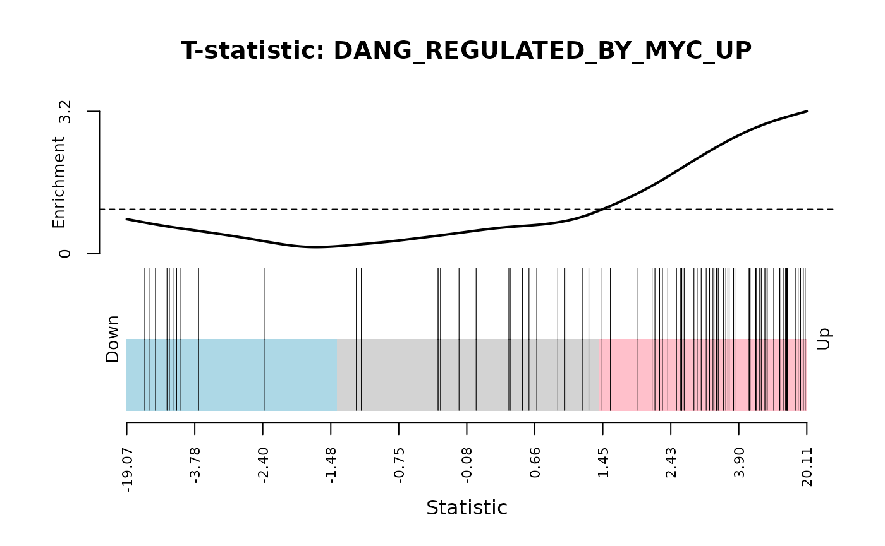

RNA-seq analysis in R
Differential expression analysis
Maria A Doyle, Harriet Dashnow, Jovana Maksimovic, Anna S Trigos, Shian Su, Charity W Law, Matthew E Ritchie, Belinda Phipson
27 April 2021
Source:vignettes/06-rnaseq-day1.Rmd
06-rnaseq-day1.RmdIntroduction
Measuring gene expression on a genome-wide scale has become common practice over the last two decades or so, with microarrays predominantly used pre-2008. With the advent of next generation sequencing technology in 2008, an increasing number of scientists use this technology to measure and understand changes in gene expression in often complex systems. As sequencing costs have decreased, using RNA-Seq to simultaneously measure the expression of tens of thousands of genes for multiple samples has never been easier. The cost of these experiments has now moved from generating the data to storing and analysing it.
There are many steps involved in analysing an RNA-Seq experiment. Analysing an RNAseq experiment begins with sequencing reads. These are aligned to a reference genome, then the number of reads mapped to each gene can be counted. This results in a table of counts, which is what we perform statistical analyses on in R. While mapping and counting are important and necessary tasks, today we will be starting from the count data and getting stuck into analysis.
Acknowledgements
This material was inspired by this case study by (Lun, Chen, and Smyth 2016) and quality control steps from this material.
Overview
- Importing table of counts
- Adding annotation
- Filtering lowly expressed genes
- Quality control
- Normalisation for composition bias
- Differential expression analysis
- Testing relative to a threshold
- Visualisation
- Gene set testing
Mouse mammary gland dataset
The data for this tutorial comes from a paper by (Fu et al. 2015). Both the raw data (sequence reads) and processed data (counts) can be downloaded from Gene Expression Omnibus database (GEO) under accession number GSE60450. This study examines the expression profiles of basal stem-cell enriched cells (B) and committed luminal cells (L) in the mammary gland of virgin, pregnant and lactating mice. Six groups are present, with one for each combination of cell type and mouse status. Each group contains two biological replicates. We will first use the counts file as a starting point for our analysis. This data has already been aligned to the mouse genome. The command line tool featureCounts (Liao, Smyth, and Shi 2014) was used to count reads mapped to mouse genes from Refseq annotation (see (Fu et al. 2015) for details).
Interactive mode
You can try out the code, without needing to install anything, through the interactive challenges option. To access the file containing all challenges, right-click on the launch button below and open in a new tab. Takes a few seconds to launch.
Data files
The RNA-Seq data files used is this workshop are available from Figshare. They were originally obtained from GSE60450. We will show you how to import the files into R from the links. Alternatively you could download them and place them in your working directory, for example in a folder called data and then refer to them in your code as e.g "data/GSE60450_Lactation-GenewiseCounts.txt").
Data files:
Bioconductor/R Packages
Packages used:
- limma
- edgeR
- Glimma
- org.Mm.eg.db
- gplots
- RColorBrewer
- NMF
To install the packages you can:
Install the latest release of R. This version of the tutorial uses R 4.0.
Get the latest version of Bioconductor and packages by starting R and entering the commands:
if (!requireNamespace("BiocManager"))
install.packages("BiocManager")
BiocManager::install(c("limma", "edgeR", "Glimma", "org.Mm.eg.db", "BiasedUrn", "GO.db", "gplots", "RColorBrewer", "NMF"))Importing the data
Set up an RStudio project File > New Project. Then open a new R script File > New File > R Script and copy the commands below.
First, let’s load all the packages we will need to analyse the data.
library(edgeR)
library(limma)
library(Glimma)
library(org.Mm.eg.db)
library(gplots)
library(RColorBrewer)
library(NMF)Then we’ll import the counts and sample information files into R.
# Read the data into R
seqdata <- read.delim("https://ndownloader.figshare.com/files/5057929?private_link=1d788fd384d33e913a2a", stringsAsFactors = FALSE)
# Read the sample information into R
sampleinfo <- read.delim("https://ndownloader.figshare.com/files/5999829?private_link=1d788fd384d33e913a2a", stringsAsFactors = TRUE)Let’s take a look at the data. You can use the head command to see the first 6 lines. The dim command will tell you how many rows and columns the data frame has.
head(seqdata)## EntrezGeneID Length MCL1.DG_BC2CTUACXX_ACTTGA_L002_R1
## 1 497097 3634 438
## 2 100503874 3259 1
## 3 100038431 1634 0
## 4 19888 9747 1
## 5 20671 3130 106
## 6 27395 4203 309
## MCL1.DH_BC2CTUACXX_CAGATC_L002_R1 MCL1.DI_BC2CTUACXX_ACAGTG_L002_R1
## 1 300 65
## 2 0 1
## 3 0 0
## 4 1 0
## 5 182 82
## 6 234 337
## MCL1.DJ_BC2CTUACXX_CGATGT_L002_R1 MCL1.DK_BC2CTUACXX_TTAGGC_L002_R1
## 1 237 354
## 2 1 0
## 3 0 0
## 4 0 0
## 5 105 43
## 6 300 290
## MCL1.DL_BC2CTUACXX_ATCACG_L002_R1 MCL1.LA_BC2CTUACXX_GATCAG_L001_R1
## 1 287 0
## 2 4 0
## 3 0 0
## 4 0 10
## 5 82 16
## 6 270 560
## MCL1.LB_BC2CTUACXX_TGACCA_L001_R1 MCL1.LC_BC2CTUACXX_GCCAAT_L001_R1
## 1 0 0
## 2 0 0
## 3 0 0
## 4 3 10
## 5 25 18
## 6 464 489
## MCL1.LD_BC2CTUACXX_GGCTAC_L001_R1 MCL1.LE_BC2CTUACXX_TAGCTT_L001_R1
## 1 0 0
## 2 0 0
## 3 0 0
## 4 2 0
## 5 8 3
## 6 328 307
## MCL1.LF_BC2CTUACXX_CTTGTA_L001_R1
## 1 0
## 2 0
## 3 0
## 4 0
## 5 10
## 6 342
dim(seqdata)## [1] 27179 14The seqdata object contains information about genes (one gene per row), the first column has the Entrez gene id, the second has the gene length and the remaining columns contain information about the number of reads aligning to the gene in each experimental sample. There are two replicates for each cell type and time point (detailed sample info can be found in file “GSE60450_series_matrix.txt” from the GEO website). The sampleinfo file contains basic information about the samples that we will need for the analysis today.
sampleinfo## FileName SampleName CellType Status
## 1 MCL1.DG_BC2CTUACXX_ACTTGA_L002_R1 MCL1.DG luminal virgin
## 2 MCL1.DH_BC2CTUACXX_CAGATC_L002_R1 MCL1.DH basal virgin
## 3 MCL1.DI_BC2CTUACXX_ACAGTG_L002_R1 MCL1.DI basal pregnant
## 4 MCL1.DJ_BC2CTUACXX_CGATGT_L002_R1 MCL1.DJ basal pregnant
## 5 MCL1.DK_BC2CTUACXX_TTAGGC_L002_R1 MCL1.DK basal lactate
## 6 MCL1.DL_BC2CTUACXX_ATCACG_L002_R1 MCL1.DL basal lactate
## 7 MCL1.LA_BC2CTUACXX_GATCAG_L001_R1 MCL1.LA basal virgin
## 8 MCL1.LB_BC2CTUACXX_TGACCA_L001_R1 MCL1.LB luminal virgin
## 9 MCL1.LC_BC2CTUACXX_GCCAAT_L001_R1 MCL1.LC luminal pregnant
## 10 MCL1.LD_BC2CTUACXX_GGCTAC_L001_R1 MCL1.LD luminal pregnant
## 11 MCL1.LE_BC2CTUACXX_TAGCTT_L001_R1 MCL1.LE luminal lactate
## 12 MCL1.LF_BC2CTUACXX_CTTGTA_L001_R1 MCL1.LF luminal lactateWe will be manipulating and reformatting the counts matrix into a suitable format for downstream analysis. The first two columns in the seqdata dataframe contain annotation information. We need to make a new matrix containing only the counts, but we can store the gene identifiers (the EntrezGeneID column) as rownames. We will add more annotation information about each gene later on in the workshop.
Format the data
Let’s create a new data object, countdata, that contains only the counts for the 12 samples.
# Remove first two columns from seqdata
countdata <- seqdata[,-(1:2)]
# Look at the output
head(countdata)## MCL1.DG_BC2CTUACXX_ACTTGA_L002_R1 MCL1.DH_BC2CTUACXX_CAGATC_L002_R1
## 1 438 300
## 2 1 0
## 3 0 0
## 4 1 1
## 5 106 182
## 6 309 234
## MCL1.DI_BC2CTUACXX_ACAGTG_L002_R1 MCL1.DJ_BC2CTUACXX_CGATGT_L002_R1
## 1 65 237
## 2 1 1
## 3 0 0
## 4 0 0
## 5 82 105
## 6 337 300
## MCL1.DK_BC2CTUACXX_TTAGGC_L002_R1 MCL1.DL_BC2CTUACXX_ATCACG_L002_R1
## 1 354 287
## 2 0 4
## 3 0 0
## 4 0 0
## 5 43 82
## 6 290 270
## MCL1.LA_BC2CTUACXX_GATCAG_L001_R1 MCL1.LB_BC2CTUACXX_TGACCA_L001_R1
## 1 0 0
## 2 0 0
## 3 0 0
## 4 10 3
## 5 16 25
## 6 560 464
## MCL1.LC_BC2CTUACXX_GCCAAT_L001_R1 MCL1.LD_BC2CTUACXX_GGCTAC_L001_R1
## 1 0 0
## 2 0 0
## 3 0 0
## 4 10 2
## 5 18 8
## 6 489 328
## MCL1.LE_BC2CTUACXX_TAGCTT_L001_R1 MCL1.LF_BC2CTUACXX_CTTGTA_L001_R1
## 1 0 0
## 2 0 0
## 3 0 0
## 4 0 0
## 5 3 10
## 6 307 342
# Store EntrezGeneID as rownames
rownames(countdata) <- seqdata[,1]Take a look at the output.
head(countdata)## MCL1.DG_BC2CTUACXX_ACTTGA_L002_R1 MCL1.DH_BC2CTUACXX_CAGATC_L002_R1
## 497097 438 300
## 100503874 1 0
## 100038431 0 0
## 19888 1 1
## 20671 106 182
## 27395 309 234
## MCL1.DI_BC2CTUACXX_ACAGTG_L002_R1 MCL1.DJ_BC2CTUACXX_CGATGT_L002_R1
## 497097 65 237
## 100503874 1 1
## 100038431 0 0
## 19888 0 0
## 20671 82 105
## 27395 337 300
## MCL1.DK_BC2CTUACXX_TTAGGC_L002_R1 MCL1.DL_BC2CTUACXX_ATCACG_L002_R1
## 497097 354 287
## 100503874 0 4
## 100038431 0 0
## 19888 0 0
## 20671 43 82
## 27395 290 270
## MCL1.LA_BC2CTUACXX_GATCAG_L001_R1 MCL1.LB_BC2CTUACXX_TGACCA_L001_R1
## 497097 0 0
## 100503874 0 0
## 100038431 0 0
## 19888 10 3
## 20671 16 25
## 27395 560 464
## MCL1.LC_BC2CTUACXX_GCCAAT_L001_R1 MCL1.LD_BC2CTUACXX_GGCTAC_L001_R1
## 497097 0 0
## 100503874 0 0
## 100038431 0 0
## 19888 10 2
## 20671 18 8
## 27395 489 328
## MCL1.LE_BC2CTUACXX_TAGCTT_L001_R1 MCL1.LF_BC2CTUACXX_CTTGTA_L001_R1
## 497097 0 0
## 100503874 0 0
## 100038431 0 0
## 19888 0 0
## 20671 3 10
## 27395 307 342Now take a look at the column names.
colnames(countdata)## [1] "MCL1.DG_BC2CTUACXX_ACTTGA_L002_R1" "MCL1.DH_BC2CTUACXX_CAGATC_L002_R1"
## [3] "MCL1.DI_BC2CTUACXX_ACAGTG_L002_R1" "MCL1.DJ_BC2CTUACXX_CGATGT_L002_R1"
## [5] "MCL1.DK_BC2CTUACXX_TTAGGC_L002_R1" "MCL1.DL_BC2CTUACXX_ATCACG_L002_R1"
## [7] "MCL1.LA_BC2CTUACXX_GATCAG_L001_R1" "MCL1.LB_BC2CTUACXX_TGACCA_L001_R1"
## [9] "MCL1.LC_BC2CTUACXX_GCCAAT_L001_R1" "MCL1.LD_BC2CTUACXX_GGCTAC_L001_R1"
## [11] "MCL1.LE_BC2CTUACXX_TAGCTT_L001_R1" "MCL1.LF_BC2CTUACXX_CTTGTA_L001_R1"These are the sample names which are pretty long so we’ll shorten these to contain only the relevant information about each sample. We will use the substr command to extract the first 7 characters and use these as the colnames.
# using substr, you extract the characters starting at position 1 and stopping at position 7 of the colnames
colnames(countdata) <- substr(colnames(countdata),start=1,stop=7)Take a look at the output.
head(countdata)## MCL1.DG MCL1.DH MCL1.DI MCL1.DJ MCL1.DK MCL1.DL MCL1.LA MCL1.LB
## 497097 438 300 65 237 354 287 0 0
## 100503874 1 0 1 1 0 4 0 0
## 100038431 0 0 0 0 0 0 0 0
## 19888 1 1 0 0 0 0 10 3
## 20671 106 182 82 105 43 82 16 25
## 27395 309 234 337 300 290 270 560 464
## MCL1.LC MCL1.LD MCL1.LE MCL1.LF
## 497097 0 0 0 0
## 100503874 0 0 0 0
## 100038431 0 0 0 0
## 19888 10 2 0 0
## 20671 18 8 3 10
## 27395 489 328 307 342Note that the column names are now the same as SampleName in the sampleinfo file. This is good because it means our sample information in sampleinfo is in the same order as the columns in countdata.
##
## TRUE
## 12Convert counts to DGEList object
Next we’ll create a DGEList object. This is an object used by edgeR to store count data. It has a number of slots for storing various parameters about the data.
y <- DGEList(countdata)
# have a look at y
y## An object of class "DGEList"
## $counts
## MCL1.DG MCL1.DH MCL1.DI MCL1.DJ MCL1.DK MCL1.DL MCL1.LA MCL1.LB
## 497097 438 300 65 237 354 287 0 0
## 100503874 1 0 1 1 0 4 0 0
## 100038431 0 0 0 0 0 0 0 0
## 19888 1 1 0 0 0 0 10 3
## 20671 106 182 82 105 43 82 16 25
## MCL1.LC MCL1.LD MCL1.LE MCL1.LF
## 497097 0 0 0 0
## 100503874 0 0 0 0
## 100038431 0 0 0 0
## 19888 10 2 0 0
## 20671 18 8 3 10
## 27174 more rows ...
##
## $samples
## group lib.size norm.factors
## MCL1.DG 1 23227641 1
## MCL1.DH 1 21777891 1
## MCL1.DI 1 24100765 1
## MCL1.DJ 1 22665371 1
## MCL1.DK 1 21529331 1
## 7 more rows ...
# See what slots are stored in y
names(y)## [1] "counts" "samples"
# Library size information is stored in the samples slot
y$samples## group lib.size norm.factors
## MCL1.DG 1 23227641 1
## MCL1.DH 1 21777891 1
## MCL1.DI 1 24100765 1
## MCL1.DJ 1 22665371 1
## MCL1.DK 1 21529331 1
## MCL1.DL 1 20015386 1
## MCL1.LA 1 20392113 1
## MCL1.LB 1 21708152 1
## MCL1.LC 1 22241607 1
## MCL1.LD 1 21988240 1
## MCL1.LE 1 24723827 1
## MCL1.LF 1 24657293 1We can also store the groups for the samples in the DGEList object.
group <- paste(sampleinfo$CellType,sampleinfo$Status,sep=".")
# Take a look
group## [1] "luminal.virgin" "basal.virgin" "basal.pregnant" "basal.pregnant"
## [5] "basal.lactate" "basal.lactate" "basal.virgin" "luminal.virgin"
## [9] "luminal.pregnant" "luminal.pregnant" "luminal.lactate" "luminal.lactate"
# Convert to factor
group <- factor(group)
# Take another look.
group## [1] luminal.virgin basal.virgin basal.pregnant basal.pregnant
## [5] basal.lactate basal.lactate basal.virgin luminal.virgin
## [9] luminal.pregnant luminal.pregnant luminal.lactate luminal.lactate
## 6 Levels: basal.lactate basal.pregnant basal.virgin ... luminal.virgin
# Add the group information into the DGEList
y$samples$group <- group
y$samples## group lib.size norm.factors
## MCL1.DG luminal.virgin 23227641 1
## MCL1.DH basal.virgin 21777891 1
## MCL1.DI basal.pregnant 24100765 1
## MCL1.DJ basal.pregnant 22665371 1
## MCL1.DK basal.lactate 21529331 1
## MCL1.DL basal.lactate 20015386 1
## MCL1.LA basal.virgin 20392113 1
## MCL1.LB luminal.virgin 21708152 1
## MCL1.LC luminal.pregnant 22241607 1
## MCL1.LD luminal.pregnant 21988240 1
## MCL1.LE luminal.lactate 24723827 1
## MCL1.LF luminal.lactate 24657293 1Adding annotation
The only annotation we can see is the Entrez Gene ID, which is not very informative. We would like to add some annotation information. There are a number of ways to do this. We will demonstrate how to do this using the org.Mm.eg.db package
First we need to decide what information we want. In order to see what we can extract we can run the columns function on the annotation database.
columns(org.Mm.eg.db)## [1] "ACCNUM" "ALIAS" "ENSEMBL" "ENSEMBLPROT" "ENSEMBLTRANS"
## [6] "ENTREZID" "ENZYME" "EVIDENCE" "EVIDENCEALL" "GENENAME"
## [11] "GO" "GOALL" "IPI" "MGI" "ONTOLOGY"
## [16] "ONTOLOGYALL" "PATH" "PFAM" "PMID" "PROSITE"
## [21] "REFSEQ" "SYMBOL" "UNIGENE" "UNIPROT"We definitely want gene symbols and perhaps the full gene name. Let’s build up our annotation information in a separate data frame using the select function.
## 'select()' returned 1:1 mapping between keys and columns
# Have a look at the annotation
head(ann)## ENTREZID SYMBOL GENENAME
## 1 497097 Xkr4 X-linked Kx blood group related 4
## 2 100503874 Gm19938 predicted gene, 19938
## 3 100038431 Gm10568 predicted gene 10568
## 4 19888 Rp1 retinitis pigmentosa 1 (human)
## 5 20671 Sox17 SRY (sex determining region Y)-box 17
## 6 27395 Mrpl15 mitochondrial ribosomal protein L15Let’s double check that the ENTREZID column matches exactly to our y$counts rownames.
##
## TRUE
## 27179We can slot in the annotation information into the genes slot of y. (Please note that if the select function returns a 1:many mapping then you can’t just append the annotation to the y object. An alternative way to get annotation will be discussed during the analysis of the second dataset.)
y$genes <- annFiltering lowly expressed genes
Genes with very low counts across all libraries provide little evidence for differential expression and they interfere with some of the statistical approximations that are used later in the pipeline. They also add to the multiple testing burden when estimating false discovery rates, reducing power to detect differentially expressed genes. These genes should be filtered out prior to further analysis.
There are a few ways to filter out lowly expressed genes. When there are biological replicates in each group, in this case we have a sample size of 2 in each group, we favour filtering on a minimum counts per million threshold present in at least 2 samples. Two represents the smallest sample size for each group in our experiment. In this dataset, we choose to retain genes if they are expressed at a counts-per-million (CPM) above 0.5 in at least two samples.
We’ll use the cpm function from the edgeR library (M. D. Robinson, McCarthy, and Smyth 2010) to generate the CPM values and then filter. Note that by converting to CPMs we are normalising for the different sequencing depths for each sample.
## MCL1.DG MCL1.DH MCL1.DI MCL1.DJ MCL1.DK MCL1.DL
## 497097 18.85684388 13.77543859 2.69700983 10.45648006 16.442685 14.3389690
## 100503874 0.04305215 0.00000000 0.04149246 0.04412017 0.000000 0.1998463
## 100038431 0.00000000 0.00000000 0.00000000 0.00000000 0.000000 0.0000000
## 19888 0.04305215 0.04591813 0.00000000 0.00000000 0.000000 0.0000000
## 20671 4.56352843 8.35709941 3.40238163 4.63261775 1.997275 4.0968483
## 27395 13.30311589 10.74484210 13.98295863 13.23605071 13.469996 13.4896224
## MCL1.LA MCL1.LB MCL1.LC MCL1.LD MCL1.LE MCL1.LF
## 497097 0.0000000 0.0000000 0.0000000 0.00000000 0.0000000 0.0000000
## 100503874 0.0000000 0.0000000 0.0000000 0.00000000 0.0000000 0.0000000
## 100038431 0.0000000 0.0000000 0.0000000 0.00000000 0.0000000 0.0000000
## 19888 0.4903857 0.1381969 0.4496078 0.09095771 0.0000000 0.0000000
## 20671 0.7846171 1.1516411 0.8092940 0.36383085 0.1213404 0.4055595
## 27395 27.4615975 21.3744588 21.9858214 14.91706476 12.4171715 13.8701357
# Which values in myCPM are greater than 0.5?
thresh <- myCPM > 0.5
# This produces a logical matrix with TRUEs and FALSEs
head(thresh)## MCL1.DG MCL1.DH MCL1.DI MCL1.DJ MCL1.DK MCL1.DL MCL1.LA MCL1.LB
## 497097 TRUE TRUE TRUE TRUE TRUE TRUE FALSE FALSE
## 100503874 FALSE FALSE FALSE FALSE FALSE FALSE FALSE FALSE
## 100038431 FALSE FALSE FALSE FALSE FALSE FALSE FALSE FALSE
## 19888 FALSE FALSE FALSE FALSE FALSE FALSE FALSE FALSE
## 20671 TRUE TRUE TRUE TRUE TRUE TRUE TRUE TRUE
## 27395 TRUE TRUE TRUE TRUE TRUE TRUE TRUE TRUE
## MCL1.LC MCL1.LD MCL1.LE MCL1.LF
## 497097 FALSE FALSE FALSE FALSE
## 100503874 FALSE FALSE FALSE FALSE
## 100038431 FALSE FALSE FALSE FALSE
## 19888 FALSE FALSE FALSE FALSE
## 20671 TRUE FALSE FALSE FALSE
## 27395 TRUE TRUE TRUE TRUE
# Summary of how many TRUEs there are in each row
# There are 11433 genes that have TRUEs in all 12 samples.
table(rowSums(thresh))##
## 0 1 2 3 4 5 6 7 8 9 10 11 12
## 10857 518 544 307 346 307 652 323 547 343 579 423 11433
# we would like to keep genes that have at least 2 TRUES in each row of thresh
keep <- rowSums(thresh) >= 2
summary(keep)## Mode FALSE TRUE
## logical 11375 15804A CPM of 0.5 is used as it corresponds to a count of 10-15 for the library sizes in this data set. If the count is any smaller, it is considered to be very low, indicating that the associated gene is not expressed in that sample. A requirement for expression in two or more libraries is used as each group contains two replicates. This ensures that a gene will be retained if it is only expressed in one group. Smaller CPM thresholds are usually appropriate for larger libraries. As a general rule, a good threshold can be chosen by identifying the CPM that corresponds to a count of 10, which in this case is about 0.5. You should filter with CPMs rather than filtering on the counts directly, as the latter does not account for differences in library sizes between samples.
# Let's have a look and see whether our threshold of 0.5 does indeed correspond to a count of about 10-15
# We will look at the first sample
plot(myCPM[,1],countdata[,1])
# Let us limit the x and y-axis so we can actually look to see what is happening at the smaller counts
plot(myCPM[,1],countdata[,1],ylim=c(0,50),xlim=c(0,3))
# Add a vertical line at 0.5 CPM
abline(v=0.5)Challenge
- Plot the counts-per-million versus counts for the second sample.
- Add a vertical line at 0.5 and a horizontal line at 10.
- Add the lines again, colouring them blue HINT: use the
colparameter.
Try the challenge interactively. Right-click on the launch button below and open in a new tab. Takes a few seconds to launch.
Solution
Now that we’ve checked our filtering method we will filter the DGEList object.
y <- y[keep, keep.lib.sizes=FALSE]Note: Alternatively, the edgeR function filterByExpr can be used to perform this method of filtering automatically, as demonstrated in the limma, Glimma and edgeR workflow article (Charity W. Law et al. 2018).
Quality control
Now that we have got rid of the lowly expressed genes and have our counts stored in a DGEList object, we can look at a few different plots to check that the data is good quality, and that the samples are as we would expect.
Library size and distribution plots
First, we can check how many reads we have for each sample in the y.
y$samples$lib.size## [1] 23218026 21768136 24091588 22656713 21522033 20008326 20384562 21698793
## [9] 22235847 21982745 24719697 24652963We can also plot the library sizes as a barplot to see whether there are any major discrepancies between the samples more easily.
# The names argument tells the barplot to use the sample names on the x-axis
# The las argument rotates the axis names
barplot(y$samples$lib.size,names=colnames(y),las=2)
# Add a title to the plot
title("Barplot of library sizes")More details: labelling
Count data is not normally distributed, so if we want to examine the distributions of the raw counts we need to log the counts. Next we’ll use box plots to check the distribution of the read counts on the log2 scale. We can use the cpm function to get log2 counts per million, which are corrected for the different library sizes. The cpm function also adds a small offset to avoid taking log of zero.
# Get log2 counts per million
logcounts <- cpm(y,log=TRUE)
# Check distributions of samples using boxplots
boxplot(logcounts, xlab="", ylab="Log2 counts per million",las=2)
# Let's add a blue horizontal line that corresponds to the median logCPM
abline(h=median(logcounts),col="blue")
title("Boxplots of logCPMs (unnormalised)")From the boxplots we see that overall the density distributions of raw log-intensities are not identical but still not very different. If a sample is really far above or below the blue horizontal line we may need to investigate that sample further. Another kind of QC plot that is helpful in checking for dodgy samples is a relative log expression (RLE) plot, which can be generated with plotRLE from the EDASeq package.
Discussion
Do any samples appear to be different compared to the others?
Multidimensional scaling plots
By far, one of the most important plots we make when we analyse RNA-Seq data are MDS plots. An MDS plot is a visualisation of a principle components analysis, which determines the greatest sources of variation in the data. A principle components analysis is an example of an unsupervised analysis, where we don’t need to specify the groups. If your experiment is well controlled and has worked well, what we hope to see is that the greatest sources of variation in the data are the treatments/groups we are interested in. It is also an incredibly useful tool for quality control and checking for outliers. We can use the plotMDS function to create the MDS plot.
plotMDS(y)It is a bit difficult to see exactly what is going on with the default plot, although we do see samples grouping together in pairs. To make this plot more informative, we can colour the samples according to the grouping information. We can also change the labels, or instead of labels we can have points.
# We specify the option to let us plot two plots side-by-sde
par(mfrow=c(1,2))
# Let's set up colour schemes for CellType
# How many cell types and in what order are they stored?
levels(sampleinfo$CellType)## [1] "basal" "luminal"
## Let's choose purple for basal and orange for luminal
col.cell <- c("purple","orange")[sampleinfo$CellType]
data.frame(sampleinfo$CellType,col.cell)## sampleinfo.CellType col.cell
## 1 luminal orange
## 2 basal purple
## 3 basal purple
## 4 basal purple
## 5 basal purple
## 6 basal purple
## 7 basal purple
## 8 luminal orange
## 9 luminal orange
## 10 luminal orange
## 11 luminal orange
## 12 luminal orange
# Redo the MDS with cell type colouring
plotMDS(y,col=col.cell)
# Let's add a legend to the plot so we know which colours correspond to which cell type
legend("topleft",fill=c("purple","orange"),legend=levels(sampleinfo$CellType))
# Add a title
title("Cell type")
# Similarly for status
levels(sampleinfo$Status)## [1] "lactate" "pregnant" "virgin"
col.status <- c("blue","red","black")[sampleinfo$Status]
col.status## [1] "black" "black" "red" "red" "blue" "blue" "black" "black" "red"
## [10] "red" "blue" "blue"
plotMDS(y,col=col.status)
legend("topleft",fill=c("blue","red","black"),legend=levels(sampleinfo$Status),cex=0.8)
title("Status")Discussion
Look at the MDS plot coloured by cell type.
Is there something strange going on with the samples?
Identify the two samples that don’t appear to be in the right place.
# There is a sample info corrected file in your data directory
# Old sampleinfo
sampleinfo## FileName SampleName CellType Status
## 1 MCL1.DG_BC2CTUACXX_ACTTGA_L002_R1 MCL1.DG luminal virgin
## 2 MCL1.DH_BC2CTUACXX_CAGATC_L002_R1 MCL1.DH basal virgin
## 3 MCL1.DI_BC2CTUACXX_ACAGTG_L002_R1 MCL1.DI basal pregnant
## 4 MCL1.DJ_BC2CTUACXX_CGATGT_L002_R1 MCL1.DJ basal pregnant
## 5 MCL1.DK_BC2CTUACXX_TTAGGC_L002_R1 MCL1.DK basal lactate
## 6 MCL1.DL_BC2CTUACXX_ATCACG_L002_R1 MCL1.DL basal lactate
## 7 MCL1.LA_BC2CTUACXX_GATCAG_L001_R1 MCL1.LA basal virgin
## 8 MCL1.LB_BC2CTUACXX_TGACCA_L001_R1 MCL1.LB luminal virgin
## 9 MCL1.LC_BC2CTUACXX_GCCAAT_L001_R1 MCL1.LC luminal pregnant
## 10 MCL1.LD_BC2CTUACXX_GGCTAC_L001_R1 MCL1.LD luminal pregnant
## 11 MCL1.LE_BC2CTUACXX_TAGCTT_L001_R1 MCL1.LE luminal lactate
## 12 MCL1.LF_BC2CTUACXX_CTTGTA_L001_R1 MCL1.LF luminal lactate
# I'm going to write over the sampleinfo object with the corrected sample info
sampleinfo <- read.delim("https://ndownloader.figshare.com/files/5999832?private_link=1d788fd384d33e913a2a", stringsAsFactors = TRUE)
sampleinfo## FileName SampleName CellType Status
## 1 MCL1.DG_BC2CTUACXX_ACTTGA_L002_R1 MCL1.DG basal virgin
## 2 MCL1.DH_BC2CTUACXX_CAGATC_L002_R1 MCL1.DH basal virgin
## 3 MCL1.DI_BC2CTUACXX_ACAGTG_L002_R1 MCL1.DI basal pregnant
## 4 MCL1.DJ_BC2CTUACXX_CGATGT_L002_R1 MCL1.DJ basal pregnant
## 5 MCL1.DK_BC2CTUACXX_TTAGGC_L002_R1 MCL1.DK basal lactate
## 6 MCL1.DL_BC2CTUACXX_ATCACG_L002_R1 MCL1.DL basal lactate
## 7 MCL1.LA_BC2CTUACXX_GATCAG_L001_R1 MCL1.LA luminal virgin
## 8 MCL1.LB_BC2CTUACXX_TGACCA_L001_R1 MCL1.LB luminal virgin
## 9 MCL1.LC_BC2CTUACXX_GCCAAT_L001_R1 MCL1.LC luminal pregnant
## 10 MCL1.LD_BC2CTUACXX_GGCTAC_L001_R1 MCL1.LD luminal pregnant
## 11 MCL1.LE_BC2CTUACXX_TAGCTT_L001_R1 MCL1.LE luminal lactate
## 12 MCL1.LF_BC2CTUACXX_CTTGTA_L001_R1 MCL1.LF luminal lactate
# We need to correct the info for the groups
group <- factor(paste(sampleinfo$CellType,sampleinfo$Status,sep="."))
y$samples$group <- group
# Redo the MDSplot with corrected information
par(mfrow=c(1,2))
col.cell <- c("purple","orange")[sampleinfo$CellType]
col.status <- c("blue","red","black")[sampleinfo$Status]
plotMDS(y,col=col.cell)
legend("topleft",fill=c("purple","orange"),legend=levels(sampleinfo$CellType))
title("Cell type")
plotMDS(y,col=col.status)
legend("topleft",fill=c("blue","red","black"),legend=levels(sampleinfo$Status),cex=0.8)
title("Status")Discussion
What is the greatest source of variation in the data (i.e. what does dimension 1 represent)?
What is the second greatest source of variation in the data?
Challenge
- Redo the plots choosing your own colours.
- Change the plotting character to a symbol instead of the column names HINT: use
pchargument. Trypch=16and see what happens. - Change the plotting characters such that basal samples have the value
1and luminal samples have the value4. Colour by status (lactate, pregnant, virgin)
Try the challenge interactively. Right-click on the launch button below and open in a new tab. Takes a few seconds to launch.
Solution
## [1] "#1B9E77" "#D95F02" "#7570B3"The distance between each pair of samples in the MDS plot, the leading log-fold change, is defined as the root-mean-square of the largest 500 log2-fold changes between that pair of samples. Replicate samples from the same group cluster together in the plot, while samples from different groups form separate clusters. This indicates that the differences between groups are larger than those within groups, i.e., differential expression is greater than the variance and can be detected. In the MDS plot, the distance between basal samples on the left and luminal cells on the right is about 6 units, corresponding to a leading fold change of about 64-fold (2^6 = 64) between basal and luminal. The expression differences between virgin, pregnant and lactating are greater for luminal cells than for basal.
Notes
- The MDS plot can be simply generated with
plotMDS(y). The additional code is purely for aesthetics, to improve the visualization of the groups. - Clustering in the MDS plot can be used to motivate changes to the design matrix in light of potential batch effects. For example, imagine that the first replicate of each group was prepared at a separate time from the second replicate. If the MDS plot showed separation of samples by time, it might be worthwhile including time in the down stream analysis to account for the time-based effect.
plotMDS plots the first two dimensions as a default, however you can plot higher dimensions using the dim argument.
# Dimension 3 appears to separate pregnant samples from the rest. Dim4?
plotMDS(y,dim=c(3,4),col=col.status,pch=char.celltype,cex=2)
legend("topright",legend=levels(sampleinfo$Status),col=cols,pch=16)
legend("bottomright",legend=levels(sampleinfo$CellType),pch=c(1,4))Another alternative is to generate an interactive MDS plot using the Glimma package. This allows the user to interactively explore the different dimensions.
Glimma was created to make interactive versions of some of the popular plots from the limma package (Su et al. 2017). It can be used to obtain MDS plots, and also mean-difference (MD) and volcano plots which will be covered later. The output of glMDSPlot is an html page (./mds/MDS-Plot.html), shown below, that shows the MDS plot on the left, and the amount of variation explained by each dimension in a barplot on the right. The user can hover over points to find out sample information, and switch between successive dimensions in the MDS plot by clicking on the bars in the barplot. The default MDS plots shows dimensions 1 and 2.
Hierarchical clustering with heatmaps
An alternative to plotMDS for examining relationships between samples is using hierarchical clustering. Heatmaps are a nice visualisation to examine hierarchical clustering of your samples. We can do this using the heatmap.2 function from the gplots package. In this example heatmap.2 calculates a matrix of euclidean distances from the logCPM (logcounts object) for the 500 most variable genes. (Note this has more complicated code than plotting principle components using plotMDS.)
The RColorBrewer package has nicer colour schemes, accessed using the brewer.pal function. “RdYlBu” is a common choice, and “Spectral” is also nice.
Note:The png function will create a png file to save the plots created straight after, and will close this file when dev.off() is called. To see your plots interactively, simply omit those two lines.
Let’s select data for the 500 most variable genes and plot the heatmap
# We estimate the variance for each row in the logcounts matrix
var_genes <- apply(logcounts, 1, var)
head(var_genes)## 497097 20671 27395 18777 21399 58175
## 13.6624115 2.7493077 0.1581944 0.1306781 0.3929526 4.8232522
# Get the gene names for the top 500 most variable genes
select_var <- names(sort(var_genes, decreasing=TRUE))[1:500]
head(select_var)## [1] "22373" "12797" "11475" "11468" "14663" "24117"
# Subset logcounts matrix
highly_variable_lcpm <- logcounts[select_var,]
dim(highly_variable_lcpm)## [1] 500 12
head(highly_variable_lcpm)## MCL1.DG MCL1.DH MCL1.DI MCL1.DJ MCL1.DK MCL1.DL MCL1.LA
## 22373 0.4660671 0.9113837 7.435080 7.807900 9.288318 9.318483 6.6277452
## 12797 10.0429713 9.6977966 11.046567 11.358857 11.605894 11.491773 0.8529774
## 11475 12.3849005 12.3247093 13.989573 14.180048 14.285489 14.032486 3.4823396
## 11468 7.1537287 6.8917703 9.325436 9.661942 9.491765 9.424803 -1.8086076
## 14663 1.9717614 1.9471846 9.091895 8.756261 9.539747 9.504098 6.1710357
## 24117 7.8378853 7.8995788 8.634622 8.582447 6.704706 6.777335 -1.3824015
## MCL1.LB MCL1.LC MCL1.LD MCL1.LE MCL1.LF
## 22373 6.6884102 12.1273320 13.1502579 15.6481000 15.569686
## 12797 1.6034598 2.3323371 2.4601069 0.8055694 1.288003
## 11475 4.3708241 5.2116574 5.0788442 3.6997655 3.965775
## 11468 -0.6387584 0.5244769 0.6694047 -0.4412496 -1.014878
## 14663 6.2328260 13.7571928 14.2506761 16.0020840 15.885390
## 24117 -0.5387838 -0.2280797 0.1243601 -2.9468278 -2.945610
## Get some nicer colours
mypalette <- brewer.pal(11,"RdYlBu")
morecols <- colorRampPalette(mypalette)
# Set up colour vector for celltype variable
col.cell <- c("purple","orange")[sampleinfo$CellType]
# Plot the heatmap
heatmap.2(highly_variable_lcpm,col=rev(morecols(50)),trace="none", main="Top 500 most variable genes across samples",ColSideColors=col.cell,scale="row")
# Save the heatmap
png(file="High_var_genes.heatmap.png")
heatmap.2(highly_variable_lcpm,col=rev(morecols(50)),trace="none", main="Top 500 most variable genes across samples",ColSideColors=col.cell,scale="row")
dev.off()Challenge
- Change the colour scheme to “PiYG” and redo the heatmap. Try
?RColorBrewerand see what other colour schemes are available. - Change the sample names to
groupusing thelabColargument - Redo the heatmap using the top 500 LEAST variable genes.
Try the challenge interactively. Right-click on the launch button below and open in a new tab. Takes a few seconds to launch.
Solution
## [1] "320714" "93684" "245638" "93747" "26433" "236792"If we wanted to add more annotations, for example colours for both cell type and status, we can’t easily do that with heatmap.2, but we could use the aheatmap function from the NMF package. We can specify which columns we want to use from sampleinfo in annCol= and coloured bars will be added for those.
mypalette <- brewer.pal(11,"RdYlBu")
morecols <- colorRampPalette(mypalette)
aheatmap(highly_variable_lcpm,col=rev(morecols(50)),main="Top 500 most variable genes across samples",annCol=sampleinfo[, 3:4],labCol=group, scale="row")Normalisation for composition bias
TMM normalization is performed to eliminate composition biases between libraries (Mark D. Robinson and Oshlack 2010). This generates a set of normalization factors, where the product of these factors and the library sizes defines the effective library size. The calcNormFactors function calculates the normalization factors between libraries. TMM normalisation (and most scaling normalisation methods) scale relative to one sample.
# Apply normalisation to DGEList object
y <- calcNormFactors(y)This will update the normalisation factors in the DGEList object (their default values are 1). Take a look at the normalisation factors for these samples.
y$samples## group lib.size norm.factors
## MCL1.DG basal.virgin 23218026 1.2368993
## MCL1.DH basal.virgin 21768136 1.2139485
## MCL1.DI basal.pregnant 24091588 1.1255640
## MCL1.DJ basal.pregnant 22656713 1.0698261
## MCL1.DK basal.lactate 21522033 1.0359212
## MCL1.DL basal.lactate 20008326 1.0872153
## MCL1.LA luminal.virgin 20384562 1.3684449
## MCL1.LB luminal.virgin 21698793 1.3653200
## MCL1.LC luminal.pregnant 22235847 1.0047431
## MCL1.LD luminal.pregnant 21982745 0.9232822
## MCL1.LE luminal.lactate 24719697 0.5291015
## MCL1.LF luminal.lactate 24652963 0.5354877The normalization factors multiply to unity across all libraries. A normalization factor below one indicates that the library size will be scaled down, as there is more suppression (i.e., composition bias) in that library relative to the other libraries. This is also equivalent to scaling the counts upwards in that sample. Conversely, a factor above one scales up the library size and is equivalent to downscaling the counts.
The last two samples have much smaller normalisation factors, and MCL1.LA and MCL1.LB have the largest. If we plot mean difference plots using the plotMD function for these samples, we should be able to see the composition bias problem. We will use the logcounts, which have been normalised for library size, but not for composition bias.
par(mfrow=c(1,2))
plotMD(logcounts,column = 7)
abline(h=0,col="grey")
plotMD(logcounts,column = 11)
abline(h=0,col="grey")
The mean-difference plots show average expression (mean: x-axis) against log-fold-changes (difference: y-axis). Because our DGEList object contains the normalisation factors, if we redo these plots using y, we should see the composition bias problem has been solved.
par(mfrow=c(1,2))
plotMD(y,column = 7)
abline(h=0,col="grey")
plotMD(y,column = 11)
abline(h=0,col="grey")Challenge
Plot the biased and unbiased MD plots side by side for the same sample to see the before and after TMM normalisation effect.
Try the challenge interactively. Right-click on the launch button below and open in a new tab. Takes a few seconds to launch.
Solution
We need to save a few data objects to use for Day 2 so we don’t have to rerun everything
# save(group,y,logcounts,sampleinfo,file="day1objects.Rdata")Differential expression with limma-voom
Now that we are happy that we have normalised the data and that the quality looks good, we can continue to testing for differentially expressed genes. There are a number of packages to analyse RNA-Seq data. The limma package (Ritchie et al. 2015) offers the voom function, which transforms the read counts into logCPMs while taking into account the mean-variance relationship in the data (Charity W. Law et al. 2014). After vooming, users can apply a linear model to the voom transformed data to test for differentially expressed genes, using standard limma commands.
Load the objects into the workspace that we created yesterday
# load("day1objects.Rdata")
# objects()Create the design matrix
First we need to create a design matrix for the groups (see the excellent limma user guide for more information on design matrices). There are many different ways to set up your design matrix, and it is dictated by what comparisons you would like to test. We will follow the set-up from pg 43 of the limma vignette (“Interaction models: 2X2 factorial designs”).
In this analysis let’s assume that we will be testing differences in status in the different cell types separately. For example, we want to know which genes are differentially expressed between pregnant and lactating in basal cells only. We have previously coded the group variable, which is a concatenation of cell type and status. Coding the cell type and status in this way allows us to be flexible in specifying which comparisons we are interested in.
# Look at group variable again
group## [1] basal.virgin basal.virgin basal.pregnant basal.pregnant
## [5] basal.lactate basal.lactate luminal.virgin luminal.virgin
## [9] luminal.pregnant luminal.pregnant luminal.lactate luminal.lactate
## 6 Levels: basal.lactate basal.pregnant basal.virgin ... luminal.virgin
# Specify a design matrix without an intercept term
design <- model.matrix(~ 0 + group)
design## groupbasal.lactate groupbasal.pregnant groupbasal.virgin
## 1 0 0 1
## 2 0 0 1
## 3 0 1 0
## 4 0 1 0
## 5 1 0 0
## 6 1 0 0
## 7 0 0 0
## 8 0 0 0
## 9 0 0 0
## 10 0 0 0
## 11 0 0 0
## 12 0 0 0
## groupluminal.lactate groupluminal.pregnant groupluminal.virgin
## 1 0 0 0
## 2 0 0 0
## 3 0 0 0
## 4 0 0 0
## 5 0 0 0
## 6 0 0 0
## 7 0 0 1
## 8 0 0 1
## 9 0 1 0
## 10 0 1 0
## 11 1 0 0
## 12 1 0 0
## attr(,"assign")
## [1] 1 1 1 1 1 1
## attr(,"contrasts")
## attr(,"contrasts")$group
## [1] "contr.treatment"## basal.lactate basal.pregnant basal.virgin luminal.lactate luminal.pregnant
## 1 0 0 1 0 0
## 2 0 0 1 0 0
## 3 0 1 0 0 0
## 4 0 1 0 0 0
## 5 1 0 0 0 0
## 6 1 0 0 0 0
## 7 0 0 0 0 0
## 8 0 0 0 0 0
## 9 0 0 0 0 1
## 10 0 0 0 0 1
## 11 0 0 0 1 0
## 12 0 0 0 1 0
## luminal.virgin
## 1 0
## 2 0
## 3 0
## 4 0
## 5 0
## 6 0
## 7 1
## 8 1
## 9 0
## 10 0
## 11 0
## 12 0
## attr(,"assign")
## [1] 1 1 1 1 1 1
## attr(,"contrasts")
## attr(,"contrasts")$group
## [1] "contr.treatment"Each column of the design matrix tells us which samples correspond to each group. The samples which come from basal cells from a lactating mouse correspond to columns 5 and 6 in the counts matrix, i.e. the samples which have 1s.
Voom transform the data
Once we have our design matrix ready to go, we can perform our voom transformation. Voom will automatically adjust the library sizes using the norm.factors already calculated. The voom transformation uses the experiment design matrix, and produces an EList object. We can add plot=TRUE to generate a plot of the mean-variance trend. This plot can also tell us if there are any genes that look really variable in our data, and if we’ve filtered the low counts adequately.
The voom normalised log2 counts can be found in v$E. Take a look at what is in the voom object.
v## An object of class "EList"
## $genes
## ENTREZID SYMBOL GENENAME
## 1 497097 Xkr4 X-linked Kx blood group related 4
## 5 20671 Sox17 SRY (sex determining region Y)-box 17
## 6 27395 Mrpl15 mitochondrial ribosomal protein L15
## 7 18777 Lypla1 lysophospholipase 1
## 9 21399 Tcea1 transcription elongation factor A (SII) 1
## 15799 more rows ...
##
## $targets
## group lib.size norm.factors
## MCL1.DG basal.virgin 28718360 1.236899
## MCL1.DH basal.virgin 26425396 1.213949
## MCL1.DI basal.pregnant 27116624 1.125564
## MCL1.DJ basal.pregnant 24238743 1.069826
## MCL1.DK basal.lactate 22295130 1.035921
## 7 more rows ...
##
## $E
## MCL1.DG MCL1.DH MCL1.DI MCL1.DJ MCL1.DK MCL1.DL MCL1.LA
## 497097 3.932532 3.507368 1.272317 3.292541 3.9909851 3.724252 -5.8019424
## 20671 1.890808 2.787899 1.605217 2.121856 0.9642868 1.923156 -0.7575483
## 27395 3.429894 3.149591 3.637638 3.631978 3.7037376 3.636318 4.3286281
## 18777 4.505933 4.285975 5.128398 5.270351 5.3801014 5.185279 4.8889286
## 21399 5.804007 5.822559 5.988345 5.764344 5.7006304 5.615502 5.5801412
## MCL1.LB MCL1.LC MCL1.LD MCL1.LE MCL1.LF
## 497097 -5.8887821 -5.4816421 -5.343143 -4.709206 -4.7226146
## 20671 -0.2163568 -0.2721888 -1.255680 -1.901851 -0.3302972
## 27395 3.9707527 4.4535229 4.016606 4.555237 4.6973455
## 18777 4.8635986 4.9031416 4.993363 5.379583 5.4610208
## 21399 5.4087074 5.5797290 5.512504 5.280898 5.2446116
## 15799 more rows ...
##
## $weights
## [,1] [,2] [,3] [,4] [,5] [,6] [,7]
## [1,] 42.85032 40.59638 19.78119 18.11020 38.62541 37.98661 0.7907909
## [2,] 21.34610 19.99539 15.74020 14.40027 10.70068 10.49511 4.5401043
## [3,] 35.05544 33.04583 39.72941 36.82081 35.31518 34.70612 50.4586968
## [4,] 56.26175 53.86441 69.16366 66.65108 66.03797 65.46069 64.6692219
## [5,] 76.92857 75.98600 76.79528 75.45282 71.62644 71.16558 73.5980084
## [,8] [,9] [,10] [,11] [,12]
## [1,] 0.7907909 0.7907909 0.7907909 0.7907909 0.7907909
## [2,] 4.7399033 3.4277768 3.2224692 2.1314506 2.1428929
## [3,] 52.1833006 45.7806579 43.1302387 38.6112610 38.8559918
## [4,] 66.0984998 60.0161723 57.3174922 54.0693981 54.3410792
## [5,] 74.5613544 70.1642210 68.1238307 50.8570652 51.1210163
## 15799 more rows ...
##
## $design
## basal.lactate basal.pregnant basal.virgin luminal.lactate luminal.pregnant
## 1 0 0 1 0 0
## 2 0 0 1 0 0
## 3 0 1 0 0 0
## 4 0 1 0 0 0
## 5 1 0 0 0 0
## luminal.virgin
## 1 0
## 2 0
## 3 0
## 4 0
## 5 0
## 7 more rows ...
# What is contained in this object?
names(v)## [1] "genes" "targets" "E" "weights" "design"Discussion
- What is in the
targetsslot ofvand what does it correspond to iny? - What are the dimensions of the
weightsslot inv?
We can repeat the box plots for the normalised data to compare to before normalisation. The expression values in v$E are already log2 values so we don’t need to log-transform.
par(mfrow=c(1,2))
boxplot(logcounts, xlab="", ylab="Log2 counts per million",las=2,main="Unnormalised logCPM")
## Let's add a blue horizontal line that corresponds to the median logCPM
abline(h=median(logcounts),col="blue")
boxplot(v$E, xlab="", ylab="Log2 counts per million",las=2,main="Voom transformed logCPM")
## Let's add a blue horizontal line that corresponds to the median logCPM
abline(h=median(v$E),col="blue")Compare these box plots to the box plots we generated before performing the normalisation. Can you see any differences?
Testing for differential expression
Now that we have the voom transformed data we can use limma to test for differential expression. First we fit a linear model for each gene using the lmFit function in limma. lmFit needs the voom object and the design matrix that we have already specified, which is stored within the voom object.
## [1] "coefficients" "stdev.unscaled" "sigma" "df.residual"
## [5] "cov.coefficients" "pivot" "rank" "genes"
## [9] "Amean" "method" "design"lmFit estimates group means according to the design matrix, as well as gene-wise variances. There are a number of items stored in the fit object, most of which are specific to the statistical testing, and we won’t be discussing these in detail today.
Since we are interested in differences between groups, we need to specify which comparisons we want to test. The comparison of interest can be specified using the makeContrasts function. Here, we are interested in knowing which genes are differentially expressed between the pregnant and lactating group in the basal cells. This is done by defining the null hypothesis as basal.pregnant - basal.lactate = 0 for each gene. Note that the group names must exactly match the column names of the design matrix.
cont.matrix <- makeContrasts(B.PregVsLac=basal.pregnant - basal.lactate,levels=design)Take a look at the contrast matrix. The contrast matrix tells limma which columns of the design matrix we are interested in testing our comparison. Note that here we have specified only one comparison to test, but we can specify as many as we want in one go.
cont.matrix## Contrasts
## Levels B.PregVsLac
## basal.lactate -1
## basal.pregnant 1
## basal.virgin 0
## luminal.lactate 0
## luminal.pregnant 0
## luminal.virgin 0Now we can apply the contrasts matrix to the fit object to get the statistics and estimated parameters of our comparison that we are interested in. Here we call the contrasts.fit function in limma.
fit.cont <- contrasts.fit(fit, cont.matrix)The final step is to call the eBayes function, which performs empirical Bayes shrinkage on the variances, and estimates moderated t-statistics and the associated p-values.
fit.cont <- eBayes(fit.cont)Check the dimensions of the fit object
dim(fit.cont)## [1] 15804 1We can use the limma decideTests function to generate a quick summary of DE genes for the contrasts.
summa.fit <- decideTests(fit.cont)
summary(summa.fit)## B.PregVsLac
## Down 2635
## NotSig 10464
## Up 2705Challenge
- Add another contrast to the contrasts matrix:
L.PregVsLac = luminal.pregnant - luminal.lactateand re-run the code above. You should have two comparisons infit.contnow. - Check out the
vennDiagramfunction (HINT: type?vennDiagram). Can you show the overlap of differentially expressed genes between the two comparisons? How many genes are commonly differentially expressed?
Try the challenge interactively. Right-click on the launch button below and open in a new tab. Takes a few seconds to launch.
Solution
## B.PregVsLac L.PregVsLac
## Down 2635 3686
## NotSig 10464 8451
## Up 2705 3667The limma topTable function summarises the output in a table format. Significant DE genes for a particular comparison can be identified by selecting genes with a p-value smaller than a chosen cut-off value and/or a fold change greater than a chosen value in this table. By default the table will be sorted by the B statistic, which is the log-odds of differential expression. Usually the B statistic and p-value ranking will be the same, but this is not always the case. We will explicitly rank by p-value, which we can specify with the sort.by argument.
The topTable command will always output the top 10 genes by default, even if they are not statistically significant. We can specify the coefficient we are interested in by the name we used in the contrast matrix (“B.PregVsLac”), or by the column number.
topTable(fit.cont,coef="B.PregVsLac",sort.by="p")## ENTREZID SYMBOL GENENAME logFC
## 24117 24117 Wif1 Wnt inhibitory factor 1 1.819943
## 381290 381290 Atp2b4 ATPase, Ca++ transporting, plasma membrane 4 -2.143885
## 78896 78896 Ecrg4 ECRG4 augurin precursor 2.807548
## 226101 226101 Myof myoferlin -2.329744
## 16012 16012 Igfbp6 insulin-like growth factor binding protein 6 -2.896115
## 231830 231830 Micall2 MICAL-like 2 2.253400
## 16669 16669 Krt19 keratin 19 -2.312721
## 55987 55987 Cpxm2 carboxypeptidase X 2 (M14 family) -1.515469
## 231991 231991 Creb5 cAMP responsive element binding protein 5 -2.598105
## 14620 14620 Gjb3 gap junction protein, beta 3 3.600094
## AveExpr t P.Value adj.P.Val B
## 24117 2.975545 20.10780 1.063770e-10 1.016240e-06 14.96977
## 381290 3.944066 -19.07495 1.982934e-10 1.016240e-06 14.39556
## 78896 3.036519 18.54773 2.758828e-10 1.016240e-06 14.07416
## 226101 6.223525 -18.26861 3.297667e-10 1.016240e-06 13.85802
## 16012 1.978449 -18.21525 3.413066e-10 1.016240e-06 13.46984
## 231830 4.760597 18.02627 3.858161e-10 1.016240e-06 13.67600
## 16669 8.741892 -17.07937 7.264548e-10 1.640127e-06 13.17357
## 55987 2.834512 -16.64333 9.829870e-10 1.718703e-06 12.88782
## 231991 4.275930 -16.53634 1.059885e-09 1.718703e-06 12.66020
## 14620 3.525281 16.46627 1.113755e-09 1.718703e-06 12.54071
## This will give the same output
topTable(fit.cont,coef=1,sort.by="p")## ENTREZID SYMBOL GENENAME logFC
## 24117 24117 Wif1 Wnt inhibitory factor 1 1.819943
## 381290 381290 Atp2b4 ATPase, Ca++ transporting, plasma membrane 4 -2.143885
## 78896 78896 Ecrg4 ECRG4 augurin precursor 2.807548
## 226101 226101 Myof myoferlin -2.329744
## 16012 16012 Igfbp6 insulin-like growth factor binding protein 6 -2.896115
## 231830 231830 Micall2 MICAL-like 2 2.253400
## 16669 16669 Krt19 keratin 19 -2.312721
## 55987 55987 Cpxm2 carboxypeptidase X 2 (M14 family) -1.515469
## 231991 231991 Creb5 cAMP responsive element binding protein 5 -2.598105
## 14620 14620 Gjb3 gap junction protein, beta 3 3.600094
## AveExpr t P.Value adj.P.Val B
## 24117 2.975545 20.10780 1.063770e-10 1.016240e-06 14.96977
## 381290 3.944066 -19.07495 1.982934e-10 1.016240e-06 14.39556
## 78896 3.036519 18.54773 2.758828e-10 1.016240e-06 14.07416
## 226101 6.223525 -18.26861 3.297667e-10 1.016240e-06 13.85802
## 16012 1.978449 -18.21525 3.413066e-10 1.016240e-06 13.46984
## 231830 4.760597 18.02627 3.858161e-10 1.016240e-06 13.67600
## 16669 8.741892 -17.07937 7.264548e-10 1.640127e-06 13.17357
## 55987 2.834512 -16.64333 9.829870e-10 1.718703e-06 12.88782
## 231991 4.275930 -16.53634 1.059885e-09 1.718703e-06 12.66020
## 14620 3.525281 16.46627 1.113755e-09 1.718703e-06 12.54071We can save the results table using the write.csv function, which writes the results out to a csv file, which you can open in Excel.
write.csv(limma.res,file="B.PregVsLacResults.csv",row.names=FALSE)Plots after testing for DE
Let’s do a few plots to make sure everything looks good and that we haven’t made a mistake in the analysis. Genome-wide plots that are useful for checking are MAplots (or MDplots) and volcano plots. There are functions in limma for plotting these with fit.cont as input.
# We want to highlight the significant genes. We can get this from decideTests.
par(mfrow=c(1,2))
plotMD(fit.cont,coef=1,status=summa.fit[,"B.PregVsLac"], values = c(-1, 1), hl.col=c("blue","red"))
# For the volcano plot we have to specify how many of the top genes to highlight.
# We can also specify that we want to plot the gene symbol for the highlighted genes.
# let's highlight the top 100 most DE genes
volcanoplot(fit.cont,coef=1,highlight=100,names=fit.cont$genes$SYMBOL, main="B.PregVsLac")Challenge
Look at the MD plot and volcano plot for the second comparison, L.PregVsLac. Change the number of highlighted genes to 200 in the volcano plot.
Try the challenge interactively. Right-click on the launch button below and open in a new tab. Takes a few seconds to launch.
Solution
Before following up on the DE genes with further lab work, it is recommended to have a look at the expression levels of the individual samples for the genes of interest. We can quickly look at grouped expression using stripchart. We can use the normalised log expression values in the voom object (v$E).
par(mfrow=c(1,3))
# Let's look at the first gene in the topTable, Wif1, which has a rowname 24117
stripchart(v$E["24117",]~group)
# This plot is ugly, let's make it better
stripchart(v$E["24117",]~group,vertical=TRUE,las=2,cex.axis=0.8,pch=16,col=1:6,method="jitter")
# Let's use nicer colours
nice.col <- brewer.pal(6,name="Dark2")
stripchart(v$E["24117",]~group,vertical=TRUE,las=2,cex.axis=0.8,pch=16,cex=1.3,col=nice.col,method="jitter",ylab="Normalised log2 expression",main="Wif1")Notice anything interesting about the expression of this gene?
Challenge
Take the top gene from the L.PregVsLactate comparison and make a stripchart of grouped expression as above. (Don’t forget to change the title of the plot.)
Try the challenge interactively. Right-click on the launch button below and open in a new tab. Takes a few seconds to launch.
Solution
## ENTREZID SYMBOL
## 12992 12992 Csn1s2b
## 13358 13358 Slc25a1
## 20531 20531 Slc34a2
## 11941 11941 Atp2b2
## 230810 230810 Slc30a2
## 100705 100705 Acacb
## 68801 68801 Elovl5
## 13645 13645 Egf
## 12683 12683 Cidea
## 26366 26366 Ceacam10
## GENENAME
## 12992 casein alpha s2-like B
## 13358 solute carrier family 25 (mitochondrial carrier, citrate transporter), member 1
## 20531 solute carrier family 34 (sodium phosphate), member 2
## 11941 ATPase, Ca++ transporting, plasma membrane 2
## 230810 solute carrier family 30 (zinc transporter), member 2
## 100705 acetyl-Coenzyme A carboxylase beta
## 68801 ELOVL family member 5, elongation of long chain fatty acids (yeast)
## 13645 epidermal growth factor
## 12683 cell death-inducing DNA fragmentation factor, alpha subunit-like effector A
## 26366 carcinoembryonic antigen-related cell adhesion molecule 10
## logFC AveExpr t P.Value adj.P.Val B
## 12992 -8.603611 3.5629500 -46.84744 4.172002e-15 6.593433e-11 23.84700
## 13358 -4.124175 5.7796989 -34.76897 1.526326e-13 1.206103e-09 21.38712
## 20531 -4.177812 4.2786290 -31.24354 5.524752e-13 2.910439e-09 20.23287
## 11941 -7.386986 1.2821431 -30.01476 8.946195e-13 3.534642e-09 18.54201
## 230810 -3.203118 2.6958115 -29.31342 1.188209e-12 3.654867e-09 19.42820
## 100705 -4.314320 4.4409137 -28.93689 1.387573e-12 3.654867e-09 19.30790
## 68801 -2.863304 6.4552045 -28.18823 1.900049e-12 3.828415e-09 19.08355
## 13645 -5.362664 0.7359047 -28.14183 1.937947e-12 3.828415e-09 17.22920
## 12683 -4.840655 3.3749575 -27.04271 3.123304e-12 5.484522e-09 18.58932
## 26366 -3.295621 1.8210142 -25.45612 6.437086e-12 1.005946e-08 17.82256An interactive version of the volcano plot above that includes the raw per sample values in a separate panel is possible via the glXYPlot function in the Glimma package.
group2 <- group
levels(group2) <- c("basal.lactate","basal.preg","basal.virgin","lum.lactate", "lum.preg", "lum.virgin")
glXYPlot(x=fit.cont$coefficients[,1], y=fit.cont$lods[,1],
xlab="logFC", ylab="B", main="B.PregVsLac",
counts=v$E, groups=group2, status=summa.fit[,1],
anno=fit.cont$genes, side.main="ENTREZID", folder="volcano")This function creates an html page (./volcano/XY-Plot.html) with a volcano plot on the left and a plot showing the log-CPM per sample for a selected gene on the right. A search bar is available to search for genes of interest.
Testing relative to a threshold (TREAT)
When there is a lot of differential expression, sometimes we may want to cut-off on a fold change threshold as well as a p-value threshold so that we follow up on the most biologically significant genes. However, it is not recommended to simply rank by p-value and then discard genes with small logFC’s, as this has been shown to increase the false discovery rate. In other words, you are not controlling the false discovery rate at 5% any more. There is a function called treat in the limma package that performs this style of analysis correctly (McCarthy and Smyth 2009). treat will simply take our fit.cont object, as well as a user-specified log fold change cut-off, and recalculate the moderated t-statistics and p-values with the new information about logFC.
# Let's decide that we are only interested in genes that have a absolute logFC of 1.
# This corresponds to a fold change of 2, or 0.5 (i.e. double or half).
# We can perform a treat analysis which ranks our genes according to p-value AND logFC.
# This is easy to do after our analysis, we just give the treat function the fit.cont object and specify our cut-off.
fit.treat <- treat(fit.cont,lfc=1)
res.treat <- decideTests(fit.treat)
summary(res.treat)## B.PregVsLac L.PregVsLac
## Down 53 631
## NotSig 15677 14775
## Up 74 398
topTable(fit.treat,coef=1,sort.by="p")## ENTREZID SYMBOL GENENAME logFC
## 211577 211577 Mrgprf MAS-related GPR, member F -5.146268
## 78896 78896 Ecrg4 ECRG4 augurin precursor 2.807548
## 16012 16012 Igfbp6 insulin-like growth factor binding protein 6 -2.896115
## 21953 21953 Tnni2 troponin I, skeletal, fast 2 -5.827889
## 14620 14620 Gjb3 gap junction protein, beta 3 3.600094
## 12992 12992 Csn1s2b casein alpha s2-like B -6.070143
## 270150 270150 Ccdc153 coiled-coil domain containing 153 -3.211148
## 226101 226101 Myof myoferlin -2.329744
## 381290 381290 Atp2b4 ATPase, Ca++ transporting, plasma membrane 4 -2.143885
## 231991 231991 Creb5 cAMP responsive element binding protein 5 -2.598105
## AveExpr t P.Value adj.P.Val
## 211577 -0.9368335 -13.18562 7.329299e-09 6.669358e-05
## 78896 3.0365195 11.94135 2.234154e-08 6.669358e-05
## 16012 1.9784488 -11.92570 2.267536e-08 6.669358e-05
## 21953 0.3020716 -11.93183 2.295775e-08 6.669358e-05
## 14620 3.5252805 11.89242 2.342636e-08 6.669358e-05
## 12992 3.5629500 -11.83199 2.532027e-08 6.669358e-05
## 270150 -1.3408388 -10.67393 7.828123e-08 1.767367e-04
## 226101 6.2235246 -10.42714 1.012983e-07 2.001148e-04
## 381290 3.9440659 -10.17758 1.322118e-07 2.050763e-04
## 231991 4.2759295 -10.17157 1.330809e-07 2.050763e-04
# Notice that much fewer genes are highlighted in the MAplot
par(mfrow=c(1,2))
plotMD(fit.treat,coef=1,status=res.treat[,"B.PregVsLac"], values=c(-1,1), hl.col=c("blue","red"))
abline(h=0,col="grey")
plotMD(fit.treat,coef=2,status=res.treat[,"L.PregVsLac"], values=c(-1,1), hl.col=c("blue","red"))
abline(h=0,col="grey")Challenge
Change the cut-off so that we are interested in genes that change at least 50% on the fold change scale.
HINT: what is the corresponding logFC value of 50% fold change? Assume basal.pregnant is 50% higher than basal.lactate
Try the challenge interactively. Right-click on the launch button below and open in a new tab. Takes a few seconds to launch.
Solution
## B.PregVsLac L.PregVsLac
## Down 234 1328
## NotSig 15250 13397
## Up 320 1079## ENTREZID SYMBOL GENENAME logFC
## 78896 78896 Ecrg4 ECRG4 augurin precursor 2.807548
## 16012 16012 Igfbp6 insulin-like growth factor binding protein 6 -2.896115
## 211577 211577 Mrgprf MAS-related GPR, member F -5.146268
## 381290 381290 Atp2b4 ATPase, Ca++ transporting, plasma membrane 4 -2.143885
## 14620 14620 Gjb3 gap junction protein, beta 3 3.600094
## 226101 226101 Myof myoferlin -2.329744
## 24117 24117 Wif1 Wnt inhibitory factor 1 1.819943
## 231830 231830 Micall2 MICAL-like 2 2.253400
## 21953 21953 Tnni2 troponin I, skeletal, fast 2 -5.827889
## 231991 231991 Creb5 cAMP responsive element binding protein 5 -2.598105
## AveExpr t P.Value adj.P.Val
## 78896 3.0365195 14.68324 2.122741e-09 1.107588e-05
## 16012 1.9784488 -14.53610 2.387463e-09 1.107588e-05
## 211577 -0.9368335 -14.50548 2.595874e-09 1.107588e-05
## 381290 3.9440659 -13.87032 4.068604e-09 1.107588e-05
## 14620 3.5252805 13.79074 4.435571e-09 1.107588e-05
## 226101 6.2235246 -13.68164 4.766155e-09 1.107588e-05
## 24117 2.9755445 13.64479 4.905791e-09 1.107588e-05
## 231830 4.7605970 13.34681 6.327022e-09 1.249903e-05
## 21953 0.3020716 -12.95757 9.721628e-09 1.399330e-05
## 231991 4.2759295 -12.81319 1.010560e-08 1.399330e-05An interactive version of the mean-difference plots is possible via the glMDPlot function in the Glimma package.
glMDPlot(fit.treat, coef=1, counts=v$E, groups=group2,
status=res.treat, side.main="ENTREZID", main="B.PregVsLac",
folder="md")As with the volcano plot example above, this function creates an html page (./md/MD-Plot.html) that allows the user to search for their favourite gene.
Gene Set Testing
Sometimes there is quite a long list of differentially expressed genes to interpret after a differential expression analysis, and it is usually infeasible to go through the list one gene at a time trying to understand it’s biological function. A common downstream procedure is gene set testing, which aims to understand which pathways/gene networks the differentially expressed genes are implicated in.
There are a number of different ways to go about testing for enrichment of biological pathways, and the test you choose usually depends on the question you’re asking. There are two kinds of tests: self-contained and competitive gene set tests. Self-contained tests, which include the ROAST procedure, ask the question “Are the genes in the set/pathway differentially expressed as a whole?” Competitive gene set tests, like goana and camera ask the question whether the differentially expressed genes tend to be over-represented in the gene set, compared to all the other genes in the experiment. These different questions use different statistical methodology.
Gene ontology testing with goana
First, we will perform a gene ontology (GO) enrichment analysis using the goana function in limma. There are approximately 20,000 GO terms, and they are split into three categories: BP (biological process), MF (molecular function) and CC (cellular component). goana uses annotation from the appropriate Bioconductor package and can be used for any of the five species specified (Hs, Mm, Rn, Dm or Pt). goana has an advantage over other methods, such as DAVID, in that there is the option to take into account the gene length bias inherent in RNA-Seq data.
Suppose we want to identify GO terms that are over-represented in the basal lactating group compared to the basal pregnancy group. This can be achieved by applying the goana function to the differential expression results of that comparison. goana takes the fit.cont object, the coefficient of interest and the species. The top set of most enriched GO terms can be viewed with the topGO function.
## Term Ont N Up Down P.Up
## GO:0022613 ribonucleoprotein complex biogenesis BP 398 196 25 1.913118e-50
## GO:0042254 ribosome biogenesis BP 290 155 12 8.927292e-46
## GO:1990904 ribonucleoprotein complex CC 659 261 48 1.594455e-44
## GO:0022626 cytosolic ribosome CC 102 75 2 4.361513e-36
## GO:0006364 rRNA processing BP 204 112 4 9.206303e-35
## GO:0016072 rRNA metabolic process BP 211 113 6 1.021692e-33
## GO:0003723 RNA binding MF 1012 320 109 1.269701e-31
## GO:0034470 ncRNA processing BP 351 145 18 3.695632e-27
## GO:0005840 ribosome CC 214 104 6 1.479315e-26
## GO:0022625 cytosolic large ribosomal subunit CC 52 44 0 2.739381e-26
## P.Down
## GO:0022613 1.0000000
## GO:0042254 1.0000000
## GO:1990904 1.0000000
## GO:0022626 0.9999999
## GO:0006364 1.0000000
## GO:0016072 1.0000000
## GO:0003723 1.0000000
## GO:0034470 1.0000000
## GO:0005840 1.0000000
## GO:0022625 1.0000000The row names of the output are the universal identifiers of the GO terms, with one term per row. The Term column gives the names of the GO terms. These terms cover three domains - biological process (BP), cellular component (CC) and molecular function (MF), as shown in the Ont column. The N column represents the total number of genes that are annotated with each GO term. The Up and Down columns represent the number of differentially expressed genes that overlap with the genes in the GO term. The P.Up and P.Down columns contain the p-values for over-representation of the GO term across the set of up- and down-regulated genes, respectively. The output table is sorted by the minimum of P.Up and P.Down by default.
An additional refinement is to supply goana with the gene lengths using the covariate argument. In the original data matrix that we loaded into R, there is a column called “Length.”
colnames(seqdata)## [1] "EntrezGeneID" "Length"
## [3] "MCL1.DG_BC2CTUACXX_ACTTGA_L002_R1" "MCL1.DH_BC2CTUACXX_CAGATC_L002_R1"
## [5] "MCL1.DI_BC2CTUACXX_ACAGTG_L002_R1" "MCL1.DJ_BC2CTUACXX_CGATGT_L002_R1"
## [7] "MCL1.DK_BC2CTUACXX_TTAGGC_L002_R1" "MCL1.DL_BC2CTUACXX_ATCACG_L002_R1"
## [9] "MCL1.LA_BC2CTUACXX_GATCAG_L001_R1" "MCL1.LB_BC2CTUACXX_TGACCA_L001_R1"
## [11] "MCL1.LC_BC2CTUACXX_GCCAAT_L001_R1" "MCL1.LD_BC2CTUACXX_GGCTAC_L001_R1"
## [13] "MCL1.LE_BC2CTUACXX_TAGCTT_L001_R1" "MCL1.LF_BC2CTUACXX_CTTGTA_L001_R1"In order to get the gene lengths for every gene in fit.cont, we can use the match command. Note that the gene length supplied needs to be in the correct order.
m <- match(rownames(fit.cont),seqdata$EntrezGeneID)
gene_length <- seqdata$Length[m]
head(gene_length)## [1] 3634 3130 4203 2433 2847 2241
# Rerun goana with gene length information
go_length <- goana(fit.cont,coef="B.PregVsLac",species="Mm",
covariate=gene_length)
topGO(go_length, n=10)## Term Ont N Up Down P.Up
## GO:0022613 ribonucleoprotein complex biogenesis BP 398 196 25 2.329797e-52
## GO:0042254 ribosome biogenesis BP 290 155 12 2.649314e-48
## GO:1990904 ribonucleoprotein complex CC 659 261 48 1.248381e-47
## GO:0022626 cytosolic ribosome CC 102 75 2 7.020502e-40
## GO:0006364 rRNA processing BP 204 112 4 1.430811e-36
## GO:0016072 rRNA metabolic process BP 211 113 6 2.150090e-35
## GO:0003723 RNA binding MF 1012 320 109 1.117780e-31
## GO:0005840 ribosome CC 214 104 6 9.362522e-31
## GO:0003735 structural constituent of ribosome MF 147 81 2 8.302045e-30
## GO:0044391 ribosomal subunit CC 182 92 2 1.510361e-29
## P.Down
## GO:0022613 1.0000000
## GO:0042254 1.0000000
## GO:1990904 1.0000000
## GO:0022626 0.9999987
## GO:0006364 1.0000000
## GO:0016072 1.0000000
## GO:0003723 1.0000000
## GO:0005840 1.0000000
## GO:0003735 1.0000000
## GO:0044391 1.0000000Challenge
Perform GO analysis for the second comparison, “L.PregVsLac,” taking into account gene length information
Try the challenge interactively. Right-click on the launch button below and open in a new tab. Takes a few seconds to launch.
Solution
## Term Ont
## GO:0031090 organelle membrane CC
## GO:0005739 mitochondrion CC
## GO:0005783 endoplasmic reticulum CC
## GO:0005515 protein binding MF
## GO:0005789 endoplasmic reticulum membrane CC
## GO:0022626 cytosolic ribosome CC
## GO:0042175 nuclear outer membrane-endoplasmic reticulum membrane network CC
## GO:0050789 regulation of biological process BP
## GO:0044281 small molecule metabolic process BP
## GO:0005634 nucleus CC
## N Up Down P.Up P.Down
## GO:0031090 1946 390 709 9.998865e-01 1.233259e-43
## GO:0005739 1676 291 597 1.000000e+00 1.405622e-35
## GO:0005783 1379 263 519 9.999829e-01 1.637816e-34
## GO:0005515 7422 2042 1672 1.518817e-29 9.998305e-01
## GO:0005789 493 68 228 1.000000e+00 2.006631e-29
## GO:0022626 102 75 7 2.095015e-29 9.999886e-01
## GO:0042175 515 75 234 9.999998e-01 9.823731e-29
## GO:0050789 8345 2257 1865 1.217543e-28 9.999991e-01
## GO:0044281 1376 261 494 9.999722e-01 3.169760e-28
## GO:0005634 6012 1693 1336 1.013031e-27 9.998554e-01Notes
- Users can specify the domain of the enriched GO terms in topGO. For instance, topGO(go,ontology=“BP”) lists the top set of most enriched GO terms that are related to a biological process. This avoids other domains that are not of interest.
- The goana function uses the NCBI RefSeq annotation. Therefore, the Entrez Gene identifier (ID) should be supplied for each gene as the row names of the fit object.
- Users should set species according to the organism being studied.
CAMERA gene set testing using the Broad’s curated gene sets
Other databases of gene sets that are available come from the Broad Institute’s Molecular Signatures Database (MSigDB). CAMERA is good option for testing a very large number of gene sets such as the MSigDB sets, as it is very fast. CAMERA is known as a competitive gene set test, however it has the advantage that it can take into account inter-gene correlation within each gene set (Wu and Smyth 2012). It also works seamlessly with a voom object, taking into account the mean-variance relationship in RNA-Seq data.
Here we will be using the C2 gene sets for mouse, available as .rdata files from the WEHI MSigDB page. The C2 gene sets contain >5000 curated gene sets collected from a variety of places: BioCarta, KEGG, Pathway Interaction Database, Reactome as well as some published studies. It doesn’t include GO terms.
# Load in the mouse c2 gene sets as Mm.c2
Mm.c2 <- readRDS(url("http://bioinf.wehi.edu.au/MSigDB/v7.1/Mm.c2.all.v7.1.entrez.rds"))
# Have a look at the first few gene sets
names(Mm.c2)[1:5]## [1] "KEGG_GLYCOLYSIS_GLUCONEOGENESIS"
## [2] "KEGG_CITRATE_CYCLE_TCA_CYCLE"
## [3] "KEGG_PENTOSE_PHOSPHATE_PATHWAY"
## [4] "KEGG_PENTOSE_AND_GLUCURONATE_INTERCONVERSIONS"
## [5] "KEGG_FRUCTOSE_AND_MANNOSE_METABOLISM"
# Number of gene sets in C2
length(Mm.c2)## [1] 5529The gene identifiers are Entrez Gene ID, which is the same as the rownames of our voom object. We need to map the Entrez gene ids between the list of gene sets and our voom object. We can do this using the ids2indices function.
c2.ind <- ids2indices(Mm.c2, rownames(v))CAMERA takes as input the voom object v, the indexed list of gene sets c2.ind, the design matrix, the contrast being tested, as well as some other arguments. By default, CAMERA can estimate the correlation for each gene set separately. However, in practise, it works well to set a small inter-gene correlation of about 0.05 using the inter.gene.cor argument.
gst.camera <- camera(v,index=c2.ind,design=design,contrast = cont.matrix[,1],inter.gene.cor=0.05)CAMERA outputs a dataframe of the resulting statistics, with each row denoting a different gene set. The output is ordered by p-value so that the most significant should be at the top. Let’s look at the top 5 gene sets:
gst.camera[1:5,]## NGenes Direction
## REACTOME_EUKARYOTIC_TRANSLATION_ELONGATION 103 Up
## KEGG_RIBOSOME 98 Up
## REACTOME_EUKARYOTIC_TRANSLATION_INITIATION 137 Up
## REACTOME_RRNA_PROCESSING 218 Up
## REACTOME_RESPONSE_OF_EIF2AK4_GCN2_TO_AMINO_ACID_DEFICIENCY 112 Up
## PValue
## REACTOME_EUKARYOTIC_TRANSLATION_ELONGATION 8.508347e-10
## KEGG_RIBOSOME 1.067029e-09
## REACTOME_EUKARYOTIC_TRANSLATION_INITIATION 2.226264e-08
## REACTOME_RRNA_PROCESSING 2.345260e-08
## REACTOME_RESPONSE_OF_EIF2AK4_GCN2_TO_AMINO_ACID_DEFICIENCY 3.997525e-08
## FDR
## REACTOME_EUKARYOTIC_TRANSLATION_ELONGATION 2.946068e-06
## KEGG_RIBOSOME 2.946068e-06
## REACTOME_EUKARYOTIC_TRANSLATION_INITIATION 3.237631e-05
## REACTOME_RRNA_PROCESSING 3.237631e-05
## REACTOME_RESPONSE_OF_EIF2AK4_GCN2_TO_AMINO_ACID_DEFICIENCY 4.414867e-05The total number of significant gene sets at 5% FDR is
table(gst.camera$FDR < 0.05)##
## FALSE TRUE
## 5472 50You can write out the camera results to a csv file to open in Excel.
write.csv(gst.camera,file="gst_BPregVsLac.csv")Challenge
- Run
cameraon the second contrast in the contrast matrix. - Run
cameraon a different set of MSigDB gene sets, the hallmark datasets,mouse_H_v5.rdata. You will need to load in the hallmark gene sets. Call the objectMm.H.
Try the challenge interactively. Right-click on the launch button below and open in a new tab. Takes a few seconds to launch.
Solution
##
## FALSE TRUE
## 47 3## NGenes Direction PValue FDR
## HALLMARK_MYC_TARGETS_V2 63 Up 7.644478e-09 3.822239e-07
## HALLMARK_MYC_TARGETS_V1 235 Up 2.209872e-06 5.524680e-05
## HALLMARK_E2F_TARGETS 241 Up 1.016821e-03 1.694701e-02
## HALLMARK_OXIDATIVE_PHOSPHORYLATION 213 Up 4.670495e-03 5.838118e-02
## HALLMARK_G2M_CHECKPOINT 272 Up 2.076291e-02 2.076291e-01
## HALLMARK_UNFOLDED_PROTEIN_RESPONSE 150 Up 5.055532e-02 4.212943e-01
## HALLMARK_CHOLESTEROL_HOMEOSTASIS 96 Down 6.757157e-02 4.826540e-01
## HALLMARK_TGF_BETA_SIGNALING 91 Up 1.018493e-01 6.365581e-01
## HALLMARK_ALLOGRAFT_REJECTION 212 Up 1.183176e-01 6.573201e-01
## HALLMARK_MTORC1_SIGNALING 263 Up 2.026148e-01 8.652915e-01ROAST gene set testing
ROAST is an example of a self-contained gene set test (Wu et al. 2010). It asks the question, “Do the genes in my set tend to be differentially expressed between my conditions of interest?” ROAST doesn’t care about what the other genes in the experiment are doing, which is different to camera and goana. ROAST is a good option for when you’re interested in a specific set, or a few sets. It is not really used to test thousands of sets at one time.
From the Hallmark gene sets, two MYC pathways were most significant.
H.camera[1:10,]## NGenes Direction PValue FDR
## HALLMARK_MYC_TARGETS_V2 63 Up 7.644478e-09 3.822239e-07
## HALLMARK_MYC_TARGETS_V1 235 Up 2.209872e-06 5.524680e-05
## HALLMARK_E2F_TARGETS 241 Up 1.016821e-03 1.694701e-02
## HALLMARK_OXIDATIVE_PHOSPHORYLATION 213 Up 4.670495e-03 5.838118e-02
## HALLMARK_G2M_CHECKPOINT 272 Up 2.076291e-02 2.076291e-01
## HALLMARK_UNFOLDED_PROTEIN_RESPONSE 150 Up 5.055532e-02 4.212943e-01
## HALLMARK_CHOLESTEROL_HOMEOSTASIS 96 Down 6.757157e-02 4.826540e-01
## HALLMARK_TGF_BETA_SIGNALING 91 Up 1.018493e-01 6.365581e-01
## HALLMARK_ALLOGRAFT_REJECTION 212 Up 1.183176e-01 6.573201e-01
## HALLMARK_MTORC1_SIGNALING 263 Up 2.026148e-01 8.652915e-01Let’s see if there are any MYC signalling pathways in MsigDB C2 collection. We can do this with the grep command on the names of the gene sets.
## [1] 462 510 587 1327 1328 1518 1519 1753 1754 1755 1756 1896 1897 1902 1903
## [16] 2129 2130 2200 2201 2294 2302 2312 2319 2362 2378 2390 2400 2410 2423 2462
## [31] 2500 2968 3053 3451 3566 3567 3818 3819 3820 3821 4029 4030 4209
# Let's save these so that we can subset c2.ind to test all gene sets with MYC in the name
myc <- grep("MYC_",names(c2.ind))
# What are these pathways called?
names(c2.ind)[myc]## [1] "PID_MYC_ACTIV_PATHWAY"
## [2] "PID_MYC_PATHWAY"
## [3] "PID_MYC_REPRESS_PATHWAY"
## [4] "ODONNELL_TARGETS_OF_MYC_AND_TFRC_UP"
## [5] "ODONNELL_TARGETS_OF_MYC_AND_TFRC_DN"
## [6] "CAIRO_PML_TARGETS_BOUND_BY_MYC_UP"
## [7] "CAIRO_PML_TARGETS_BOUND_BY_MYC_DN"
## [8] "SCHLOSSER_MYC_AND_SERUM_RESPONSE_SYNERGY"
## [9] "SCHLOSSER_MYC_TARGETS_REPRESSED_BY_SERUM"
## [10] "SCHLOSSER_MYC_TARGETS_AND_SERUM_RESPONSE_DN"
## [11] "SCHLOSSER_MYC_TARGETS_AND_SERUM_RESPONSE_UP"
## [12] "CEBALLOS_TARGETS_OF_TP53_AND_MYC_UP"
## [13] "CEBALLOS_TARGETS_OF_TP53_AND_MYC_DN"
## [14] "KIM_MYC_AMPLIFICATION_TARGETS_UP"
## [15] "KIM_MYC_AMPLIFICATION_TARGETS_DN"
## [16] "BENPORATH_MYC_TARGETS_WITH_EBOX"
## [17] "BENPORATH_MYC_MAX_TARGETS"
## [18] "MORI_EMU_MYC_LYMPHOMA_BY_ONSET_TIME_UP"
## [19] "MORI_EMU_MYC_LYMPHOMA_BY_ONSET_TIME_DN"
## [20] "SCHUHMACHER_MYC_TARGETS_DN"
## [21] "LEE_LIVER_CANCER_MYC_TGFA_DN"
## [22] "LEE_LIVER_CANCER_MYC_UP"
## [23] "LEE_LIVER_CANCER_MYC_TGFA_UP"
## [24] "LEE_LIVER_CANCER_MYC_E2F1_DN"
## [25] "LEE_LIVER_CANCER_MYC_E2F1_UP"
## [26] "SCHUHMACHER_MYC_TARGETS_UP"
## [27] "LEE_LIVER_CANCER_MYC_DN"
## [28] "COLLER_MYC_TARGETS_UP"
## [29] "COLLER_MYC_TARGETS_DN"
## [30] "YU_MYC_TARGETS_UP"
## [31] "YU_MYC_TARGETS_DN"
## [32] "BILD_MYC_ONCOGENIC_SIGNATURE"
## [33] "SANSOM_APC_MYC_TARGETS"
## [34] "SOUCEK_MYC_TARGETS"
## [35] "ELLWOOD_MYC_TARGETS_UP"
## [36] "ELLWOOD_MYC_TARGETS_DN"
## [37] "DANG_REGULATED_BY_MYC_UP"
## [38] "DANG_REGULATED_BY_MYC_DN"
## [39] "DANG_MYC_TARGETS_UP"
## [40] "DANG_MYC_TARGETS_DN"
## [41] "ACOSTA_PROLIFERATION_INDEPENDENT_MYC_TARGETS_UP"
## [42] "ACOSTA_PROLIFERATION_INDEPENDENT_MYC_TARGETS_DN"
## [43] "ALFANO_MYC_TARGETS"Let’s use ROAST to see if these MYC related gene sets tend to be differentially expressed. Note that the syntax for camera and roast is almost identical.
myc.rst <- roast(v,index=c2.ind[myc],design=design,contrast=cont.matrix[,1],nrot=999)
myc.rst[1:15,]## NGenes PropDown PropUp
## COLLER_MYC_TARGETS_UP 26 0.07692308 0.7692308
## SCHLOSSER_MYC_TARGETS_AND_SERUM_RESPONSE_DN 57 0.08771930 0.7543860
## DANG_MYC_TARGETS_UP 159 0.11949686 0.7106918
## DANG_REGULATED_BY_MYC_UP 89 0.12359551 0.6741573
## PID_MYC_ACTIV_PATHWAY 101 0.15841584 0.6237624
## SCHLOSSER_MYC_TARGETS_REPRESSED_BY_SERUM 191 0.12565445 0.6020942
## SCHLOSSER_MYC_TARGETS_AND_SERUM_RESPONSE_UP 64 0.14062500 0.5781250
## BILD_MYC_ONCOGENIC_SIGNATURE 286 0.27622378 0.4650350
## BENPORATH_MYC_TARGETS_WITH_EBOX 291 0.23024055 0.4295533
## ACOSTA_PROLIFERATION_INDEPENDENT_MYC_TARGETS_UP 101 0.18811881 0.4059406
## ELLWOOD_MYC_TARGETS_UP 19 0.10526316 0.3157895
## CAIRO_PML_TARGETS_BOUND_BY_MYC_UP 28 0.07142857 0.6785714
## KIM_MYC_AMPLIFICATION_TARGETS_UP 227 0.16740088 0.4977974
## SCHLOSSER_MYC_AND_SERUM_RESPONSE_SYNERGY 46 0.19565217 0.4782609
## KIM_MYC_AMPLIFICATION_TARGETS_DN 164 0.39634146 0.2195122
## Direction PValue FDR
## COLLER_MYC_TARGETS_UP Up 0.001 0.001954545
## SCHLOSSER_MYC_TARGETS_AND_SERUM_RESPONSE_DN Up 0.001 0.001954545
## DANG_MYC_TARGETS_UP Up 0.001 0.001954545
## DANG_REGULATED_BY_MYC_UP Up 0.001 0.001954545
## PID_MYC_ACTIV_PATHWAY Up 0.001 0.001954545
## SCHLOSSER_MYC_TARGETS_REPRESSED_BY_SERUM Up 0.001 0.001954545
## SCHLOSSER_MYC_TARGETS_AND_SERUM_RESPONSE_UP Up 0.001 0.001954545
## BILD_MYC_ONCOGENIC_SIGNATURE Up 0.001 0.001954545
## BENPORATH_MYC_TARGETS_WITH_EBOX Up 0.001 0.001954545
## ACOSTA_PROLIFERATION_INDEPENDENT_MYC_TARGETS_UP Up 0.001 0.001954545
## ELLWOOD_MYC_TARGETS_UP Up 0.001 0.001954545
## CAIRO_PML_TARGETS_BOUND_BY_MYC_UP Up 0.002 0.004300000
## KIM_MYC_AMPLIFICATION_TARGETS_UP Up 0.002 0.004300000
## SCHLOSSER_MYC_AND_SERUM_RESPONSE_SYNERGY Up 0.002 0.004300000
## KIM_MYC_AMPLIFICATION_TARGETS_DN Down 0.002 0.004300000
## PValue.Mixed FDR.Mixed
## COLLER_MYC_TARGETS_UP 0.001 0.001
## SCHLOSSER_MYC_TARGETS_AND_SERUM_RESPONSE_DN 0.001 0.001
## DANG_MYC_TARGETS_UP 0.001 0.001
## DANG_REGULATED_BY_MYC_UP 0.001 0.001
## PID_MYC_ACTIV_PATHWAY 0.001 0.001
## SCHLOSSER_MYC_TARGETS_REPRESSED_BY_SERUM 0.001 0.001
## SCHLOSSER_MYC_TARGETS_AND_SERUM_RESPONSE_UP 0.001 0.001
## BILD_MYC_ONCOGENIC_SIGNATURE 0.002 0.002
## BENPORATH_MYC_TARGETS_WITH_EBOX 0.001 0.001
## ACOSTA_PROLIFERATION_INDEPENDENT_MYC_TARGETS_UP 0.001 0.001
## ELLWOOD_MYC_TARGETS_UP 0.001 0.001
## CAIRO_PML_TARGETS_BOUND_BY_MYC_UP 0.001 0.001
## KIM_MYC_AMPLIFICATION_TARGETS_UP 0.001 0.001
## SCHLOSSER_MYC_AND_SERUM_RESPONSE_SYNERGY 0.001 0.001
## KIM_MYC_AMPLIFICATION_TARGETS_DN 0.001 0.001Each row corresponds to a single gene set. The NGenes column gives the number of genes in each set. The PropDown and PropUp columns contain the proportions of genes in the set that are down- and up-regulated, respectively, with absolute fold changes greater than 2. The net direction of change is determined from the significance of changes in each direction, and is shown in the Direction column. The PValue provides evidence for whether the majority of genes in the set are DE in the specified direction, whereas the PValue.Mixed tests for differential expression in any direction. FDRs are computed from the corresponding p-values across all sets.
Challenge
- Test whether the MYC signalling pathways tend to be differentially expressed between luminal pregnant vs lactating (the second contrast).
- Look for gene sets containing “WNT” in the name and see whether they tend to be differentially expressed in basal pregnant vs lactating.
Try the challenge interactively. Right-click on the launch button below and open in a new tab. Takes a few seconds to launch.
Solution
## NGenes PropDown PropUp Direction PValue
## ODONNELL_TARGETS_OF_MYC_AND_TFRC_DN 54 0.6481481 0.1481481 Down 0.001
## PID_MYC_PATHWAY 35 0.2000000 0.5428571 Up 0.001
## ELLWOOD_MYC_TARGETS_DN 61 0.5409836 0.2622951 Down 0.001
## BILD_MYC_ONCOGENIC_SIGNATURE 286 0.2902098 0.4195804 Up 0.001
## PID_MYC_REPRESS_PATHWAY 93 0.2150538 0.3978495 Up 0.001
## DANG_MYC_TARGETS_DN 43 0.2325581 0.5813953 Up 0.002
## BENPORATH_MYC_TARGETS_WITH_EBOX 291 0.3024055 0.4329897 Up 0.002
## ELLWOOD_MYC_TARGETS_UP 19 0.2105263 0.3684211 Up 0.002
## LEE_LIVER_CANCER_MYC_TGFA_DN 63 0.3650794 0.3492063 Down 0.002
## YU_MYC_TARGETS_UP 47 0.7021277 0.1063830 Down 0.003
## SCHUHMACHER_MYC_TARGETS_UP 99 0.4646465 0.3131313 Down 0.006
## ALFANO_MYC_TARGETS 365 0.2794521 0.4027397 Up 0.007
## ODONNELL_TARGETS_OF_MYC_AND_TFRC_UP 137 0.3576642 0.2262774 Down 0.007
## PID_MYC_ACTIV_PATHWAY 101 0.2970297 0.4158416 Up 0.009
## DANG_REGULATED_BY_MYC_DN 343 0.2565598 0.4169096 Up 0.012
## FDR PValue.Mixed FDR.Mixed
## ODONNELL_TARGETS_OF_MYC_AND_TFRC_DN 0.004300000 0.001 0.001
## PID_MYC_PATHWAY 0.004300000 0.001 0.001
## ELLWOOD_MYC_TARGETS_DN 0.004300000 0.001 0.001
## BILD_MYC_ONCOGENIC_SIGNATURE 0.004300000 0.001 0.001
## PID_MYC_REPRESS_PATHWAY 0.004300000 0.001 0.001
## DANG_MYC_TARGETS_DN 0.007166667 0.001 0.001
## BENPORATH_MYC_TARGETS_WITH_EBOX 0.007166667 0.001 0.001
## ELLWOOD_MYC_TARGETS_UP 0.007166667 0.001 0.001
## LEE_LIVER_CANCER_MYC_TGFA_DN 0.007166667 0.001 0.001
## YU_MYC_TARGETS_UP 0.010750000 0.001 0.001
## SCHUHMACHER_MYC_TARGETS_UP 0.021500000 0.001 0.001
## ALFANO_MYC_TARGETS 0.021500000 0.001 0.001
## ODONNELL_TARGETS_OF_MYC_AND_TFRC_UP 0.021500000 0.001 0.001
## PID_MYC_ACTIV_PATHWAY 0.026107143 0.001 0.001
## DANG_REGULATED_BY_MYC_DN 0.032966667 0.001 0.001## NGenes
## REACTOME_RUNX1_REGULATES_TRANSCRIPTION_OF_GENES_INVOLVED_IN_WNT_SIGNALING 6
## SANSOM_WNT_PATHWAY_REQUIRE_MYC 91
## PID_WNT_CANONICAL_PATHWAY 29
## PID_WNT_NONCANONICAL_PATHWAY 47
## REACTOME_REPRESSION_OF_WNT_TARGET_GENES 16
## KEGG_WNT_SIGNALING_PATHWAY 151
## REACTOME_RNF_MUTANTS_SHOW_ENHANCED_WNT_SIGNALING_AND_PROLIFERATION 11
## BIOCARTA_WNT_PATHWAY 41
## WILLERT_WNT_SIGNALING 38
## PID_WNT_SIGNALING_PATHWAY 29
## REACTOME_SIGNALING_BY_WNT_IN_CANCER 39
## REACTOME_WNT_MEDIATED_ACTIVATION_OF_DVL 9
## REACTOME_WNT_LIGAND_BIOGENESIS_AND_TRAFFICKING 18
## REACTOME_TCF_DEPENDENT_SIGNALING_IN_RESPONSE_TO_WNT 227
## REACTOME_NEGATIVE_REGULATION_OF_TCF_DEPENDENT_SIGNALING_BY_WNT_LIGAND_ANTAGONISTS 18
## PropDown
## REACTOME_RUNX1_REGULATES_TRANSCRIPTION_OF_GENES_INVOLVED_IN_WNT_SIGNALING 0.1666667
## SANSOM_WNT_PATHWAY_REQUIRE_MYC 0.2087912
## PID_WNT_CANONICAL_PATHWAY 0.4482759
## PID_WNT_NONCANONICAL_PATHWAY 0.4255319
## REACTOME_REPRESSION_OF_WNT_TARGET_GENES 0.2500000
## KEGG_WNT_SIGNALING_PATHWAY 0.3642384
## REACTOME_RNF_MUTANTS_SHOW_ENHANCED_WNT_SIGNALING_AND_PROLIFERATION 0.4545455
## BIOCARTA_WNT_PATHWAY 0.2926829
## WILLERT_WNT_SIGNALING 0.2631579
## PID_WNT_SIGNALING_PATHWAY 0.2758621
## REACTOME_SIGNALING_BY_WNT_IN_CANCER 0.4102564
## REACTOME_WNT_MEDIATED_ACTIVATION_OF_DVL 0.2222222
## REACTOME_WNT_LIGAND_BIOGENESIS_AND_TRAFFICKING 0.3888889
## REACTOME_TCF_DEPENDENT_SIGNALING_IN_RESPONSE_TO_WNT 0.3083700
## REACTOME_NEGATIVE_REGULATION_OF_TCF_DEPENDENT_SIGNALING_BY_WNT_LIGAND_ANTAGONISTS 0.3888889
## PropUp
## REACTOME_RUNX1_REGULATES_TRANSCRIPTION_OF_GENES_INVOLVED_IN_WNT_SIGNALING 0.50000000
## SANSOM_WNT_PATHWAY_REQUIRE_MYC 0.38461538
## PID_WNT_CANONICAL_PATHWAY 0.13793103
## PID_WNT_NONCANONICAL_PATHWAY 0.14893617
## REACTOME_REPRESSION_OF_WNT_TARGET_GENES 0.62500000
## KEGG_WNT_SIGNALING_PATHWAY 0.24503311
## REACTOME_RNF_MUTANTS_SHOW_ENHANCED_WNT_SIGNALING_AND_PROLIFERATION 0.09090909
## BIOCARTA_WNT_PATHWAY 0.36585366
## WILLERT_WNT_SIGNALING 0.47368421
## PID_WNT_SIGNALING_PATHWAY 0.31034483
## REACTOME_SIGNALING_BY_WNT_IN_CANCER 0.25641026
## REACTOME_WNT_MEDIATED_ACTIVATION_OF_DVL 0.33333333
## REACTOME_WNT_LIGAND_BIOGENESIS_AND_TRAFFICKING 0.22222222
## REACTOME_TCF_DEPENDENT_SIGNALING_IN_RESPONSE_TO_WNT 0.33039648
## REACTOME_NEGATIVE_REGULATION_OF_TCF_DEPENDENT_SIGNALING_BY_WNT_LIGAND_ANTAGONISTS 0.33333333
## Direction
## REACTOME_RUNX1_REGULATES_TRANSCRIPTION_OF_GENES_INVOLVED_IN_WNT_SIGNALING Up
## SANSOM_WNT_PATHWAY_REQUIRE_MYC Up
## PID_WNT_CANONICAL_PATHWAY Down
## PID_WNT_NONCANONICAL_PATHWAY Down
## REACTOME_REPRESSION_OF_WNT_TARGET_GENES Up
## KEGG_WNT_SIGNALING_PATHWAY Down
## REACTOME_RNF_MUTANTS_SHOW_ENHANCED_WNT_SIGNALING_AND_PROLIFERATION Down
## BIOCARTA_WNT_PATHWAY Up
## WILLERT_WNT_SIGNALING Up
## PID_WNT_SIGNALING_PATHWAY Up
## REACTOME_SIGNALING_BY_WNT_IN_CANCER Down
## REACTOME_WNT_MEDIATED_ACTIVATION_OF_DVL Up
## REACTOME_WNT_LIGAND_BIOGENESIS_AND_TRAFFICKING Down
## REACTOME_TCF_DEPENDENT_SIGNALING_IN_RESPONSE_TO_WNT Up
## REACTOME_NEGATIVE_REGULATION_OF_TCF_DEPENDENT_SIGNALING_BY_WNT_LIGAND_ANTAGONISTS Up
## PValue
## REACTOME_RUNX1_REGULATES_TRANSCRIPTION_OF_GENES_INVOLVED_IN_WNT_SIGNALING 0.001
## SANSOM_WNT_PATHWAY_REQUIRE_MYC 0.001
## PID_WNT_CANONICAL_PATHWAY 0.002
## PID_WNT_NONCANONICAL_PATHWAY 0.003
## REACTOME_REPRESSION_OF_WNT_TARGET_GENES 0.004
## KEGG_WNT_SIGNALING_PATHWAY 0.008
## REACTOME_RNF_MUTANTS_SHOW_ENHANCED_WNT_SIGNALING_AND_PROLIFERATION 0.010
## BIOCARTA_WNT_PATHWAY 0.014
## WILLERT_WNT_SIGNALING 0.029
## PID_WNT_SIGNALING_PATHWAY 0.041
## REACTOME_SIGNALING_BY_WNT_IN_CANCER 0.068
## REACTOME_WNT_MEDIATED_ACTIVATION_OF_DVL 0.094
## REACTOME_WNT_LIGAND_BIOGENESIS_AND_TRAFFICKING 0.207
## REACTOME_TCF_DEPENDENT_SIGNALING_IN_RESPONSE_TO_WNT 0.265
## REACTOME_NEGATIVE_REGULATION_OF_TCF_DEPENDENT_SIGNALING_BY_WNT_LIGAND_ANTAGONISTS 0.328
## FDR
## REACTOME_RUNX1_REGULATES_TRANSCRIPTION_OF_GENES_INVOLVED_IN_WNT_SIGNALING 0.00550000
## SANSOM_WNT_PATHWAY_REQUIRE_MYC 0.00550000
## PID_WNT_CANONICAL_PATHWAY 0.01100000
## PID_WNT_NONCANONICAL_PATHWAY 0.01375000
## REACTOME_REPRESSION_OF_WNT_TARGET_GENES 0.01540000
## KEGG_WNT_SIGNALING_PATHWAY 0.02750000
## REACTOME_RNF_MUTANTS_SHOW_ENHANCED_WNT_SIGNALING_AND_PROLIFERATION 0.02985714
## BIOCARTA_WNT_PATHWAY 0.03712500
## WILLERT_WNT_SIGNALING 0.06966667
## PID_WNT_SIGNALING_PATHWAY 0.08910000
## REACTOME_SIGNALING_BY_WNT_IN_CANCER 0.13500000
## REACTOME_WNT_MEDIATED_ACTIVATION_OF_DVL 0.17141667
## REACTOME_WNT_LIGAND_BIOGENESIS_AND_TRAFFICKING 0.34946154
## REACTOME_TCF_DEPENDENT_SIGNALING_IN_RESPONSE_TO_WNT 0.41564286
## REACTOME_NEGATIVE_REGULATION_OF_TCF_DEPENDENT_SIGNALING_BY_WNT_LIGAND_ANTAGONISTS 0.48033333
## PValue.Mixed
## REACTOME_RUNX1_REGULATES_TRANSCRIPTION_OF_GENES_INVOLVED_IN_WNT_SIGNALING 0.001
## SANSOM_WNT_PATHWAY_REQUIRE_MYC 0.001
## PID_WNT_CANONICAL_PATHWAY 0.001
## PID_WNT_NONCANONICAL_PATHWAY 0.001
## REACTOME_REPRESSION_OF_WNT_TARGET_GENES 0.001
## KEGG_WNT_SIGNALING_PATHWAY 0.001
## REACTOME_RNF_MUTANTS_SHOW_ENHANCED_WNT_SIGNALING_AND_PROLIFERATION 0.014
## BIOCARTA_WNT_PATHWAY 0.001
## WILLERT_WNT_SIGNALING 0.001
## PID_WNT_SIGNALING_PATHWAY 0.001
## REACTOME_SIGNALING_BY_WNT_IN_CANCER 0.001
## REACTOME_WNT_MEDIATED_ACTIVATION_OF_DVL 0.009
## REACTOME_WNT_LIGAND_BIOGENESIS_AND_TRAFFICKING 0.001
## REACTOME_TCF_DEPENDENT_SIGNALING_IN_RESPONSE_TO_WNT 0.001
## REACTOME_NEGATIVE_REGULATION_OF_TCF_DEPENDENT_SIGNALING_BY_WNT_LIGAND_ANTAGONISTS 0.001
## FDR.Mixed
## REACTOME_RUNX1_REGULATES_TRANSCRIPTION_OF_GENES_INVOLVED_IN_WNT_SIGNALING 0.001
## SANSOM_WNT_PATHWAY_REQUIRE_MYC 0.001
## PID_WNT_CANONICAL_PATHWAY 0.001
## PID_WNT_NONCANONICAL_PATHWAY 0.001
## REACTOME_REPRESSION_OF_WNT_TARGET_GENES 0.001
## KEGG_WNT_SIGNALING_PATHWAY 0.001
## REACTOME_RNF_MUTANTS_SHOW_ENHANCED_WNT_SIGNALING_AND_PROLIFERATION 0.014
## BIOCARTA_WNT_PATHWAY 0.001
## WILLERT_WNT_SIGNALING 0.001
## PID_WNT_SIGNALING_PATHWAY 0.001
## REACTOME_SIGNALING_BY_WNT_IN_CANCER 0.001
## REACTOME_WNT_MEDIATED_ACTIVATION_OF_DVL 0.009
## REACTOME_WNT_LIGAND_BIOGENESIS_AND_TRAFFICKING 0.001
## REACTOME_TCF_DEPENDENT_SIGNALING_IN_RESPONSE_TO_WNT 0.001
## REACTOME_NEGATIVE_REGULATION_OF_TCF_DEPENDENT_SIGNALING_BY_WNT_LIGAND_ANTAGONISTS 0.001Notes
- A common application of ROAST is to use a set of DE genes that was defined from an analysis of an independent data set. ROAST can then determine whether similar changes are observed in the contrast of interest for the current data set.
- Even for GO-defined gene sets, goana and ROAST have different behaviours. In goana, the significance of differential expression for a GO term is determined relative to other DE genes that are not annotated with that term. In ROAST, only differential expression for the genes in the set are relevant to the significance of that set and its corresponding term. goana depends on a significance cutoff to choose DE genes, whereas ROAST does not require a cutoff and evaluates all genes in the set.
- ROAST estimates p-values by simulation, so the results may change slightly between runs. More precise p-values can be obtained by increasing the number of rotations, albeit at the cost of increased computational time.
- The smallest p-value that can be reported is 1/(2nrot + 1) where nrot is the number of rotations. This lower bound can be decreased by increasing nrot.
Visualising gene set tests: Barcode and enrichment plots
A barcode plot can be produced with the barcodeplot function to visualize the results for any particular set. To display a barcodeplot, we need to decide what statistics to use, usually we choose either logFC or t-statistics for the comparison of interest. We also need to make sure we give the statistics in the correct order, such that subsetting the statistics vector will give the genes for the gene set we’re interested in. The best way to do this is to work with the fit object directly. The coefficients slot contains the logFCs and the t slot contains the t-statistics.
Let’s have a look at one of the top MYC related pathway in the ROAST test that you have already done, “DANG_REGULATED_BY_MYC_UP.”
# Have a look at the logFCs and t-statistics in fit.cont
names(fit.cont)## [1] "coefficients" "stdev.unscaled" "sigma" "df.residual"
## [5] "cov.coefficients" "pivot" "rank" "genes"
## [9] "Amean" "method" "design" "contrasts"
## [13] "df.prior" "s2.prior" "var.prior" "proportion"
## [17] "s2.post" "t" "df.total" "p.value"
## [21] "lods" "F" "F.p.value"
head(fit.cont$coefficients)## Contrasts
## B.PregVsLac L.PregVsLac
## 497097 -1.62084708 -0.6964826
## 20671 0.41298109 0.3652171
## 27395 -0.03540567 -0.3849389
## 18777 -0.08505647 -0.4731888
## 21399 0.21912852 0.2839044
## 58175 1.49852621 1.4736067
head(fit.cont$t)## Contrasts
## B.PregVsLac L.PregVsLac
## 497097 -4.0541969 -0.3076765
## 20671 1.0030050 0.4055901
## 27395 -0.1936036 -2.2395329
## 18777 -0.7975228 -4.0746018
## 21399 2.1866392 2.5284968
## 58175 1.5788218 3.1387631
par(mfrow=c(1,1))
# barcode plot with logFCs
barcodeplot(fit.cont$coeff[,1], index=c2.ind[["DANG_REGULATED_BY_MYC_UP"]], main="LogFC: DANG_REGULATED_BY_MYC_UP")
# barcode plot using t-statistics
barcodeplot(fit.cont$t[,1], index=c2.ind[["DANG_REGULATED_BY_MYC_UP"]], main="T-statistic: DANG_REGULATED_BY_MYC_UP")
Here, genes are represented by bars and are ranked from left to right by decreasing log-fold change or t-statistic. This forms the barcode-like pattern. The line above the barcode shows the relative local enrichment of the vertical bars in each part of the plot. The barcodeplot shows that the genes in this gene set tend to be up-regulated between pregnant and lactating in basal cells.
Challenge
- Produce a barcodeplot for luminal pregnant vs lactating for this gene set. Does the pattern of enrichment look as strong?
- Choose one of the Wnt signalling pathways and produce a barcode plot for both comparisons.
- You can put two gene sets on one plot, for example a set that is up-regulated and one that is down-regulated, by adding a gene set to the
index2argument. Produce a barcodeplot with two sets of your choosing.
Try the challenge interactively. Right-click on the launch button below and open in a new tab. Takes a few seconds to launch.
Solution

Record package versions
The session information describes the versions of R and of the packages that were used in the analysis. This is useful for record-keeping purposes, and ensures that an analysis can be reproduced even when the software is updated over time.
## R version 4.0.3 (2020-10-10)
## Platform: x86_64-pc-linux-gnu (64-bit)
## Running under: Ubuntu 20.04 LTS
##
## Matrix products: default
## BLAS/LAPACK: /usr/lib/x86_64-linux-gnu/openblas-pthread/libopenblasp-r0.3.8.so
##
## locale:
## [1] LC_CTYPE=en_US.UTF-8 LC_NUMERIC=C
## [3] LC_TIME=en_US.UTF-8 LC_COLLATE=en_US.UTF-8
## [5] LC_MONETARY=en_US.UTF-8 LC_MESSAGES=C
## [7] LC_PAPER=en_US.UTF-8 LC_NAME=C
## [9] LC_ADDRESS=C LC_TELEPHONE=C
## [11] LC_MEASUREMENT=en_US.UTF-8 LC_IDENTIFICATION=C
##
## attached base packages:
## [1] parallel stats4 stats graphics grDevices utils datasets
## [8] methods base
##
## other attached packages:
## [1] NMF_0.23.0 cluster_2.1.1 rngtools_1.5
## [4] pkgmaker_0.32.2 registry_0.5-1 RColorBrewer_1.1-2
## [7] gplots_3.1.1 org.Mm.eg.db_3.12.0 AnnotationDbi_1.52.0
## [10] IRanges_2.24.1 S4Vectors_0.28.1 Biobase_2.50.0
## [13] BiocGenerics_0.36.1 Glimma_2.0.0 edgeR_3.32.1
## [16] limma_3.46.0
##
## loaded via a namespace (and not attached):
## [1] bitops_1.0-7 matrixStats_0.58.0
## [3] fs_1.5.0 bit64_4.0.5
## [5] doParallel_1.0.16 httr_1.4.2
## [7] rprojroot_2.0.2 GenomeInfoDb_1.26.7
## [9] tools_4.0.3 utf8_1.2.1
## [11] R6_2.5.0 KernSmooth_2.23-18
## [13] DBI_1.1.1 colorspace_2.0-0
## [15] withr_2.4.2 DESeq2_1.30.1
## [17] bit_4.0.4 compiler_4.0.3
## [19] textshaping_0.3.3 BiasedUrn_1.07
## [21] desc_1.3.0 DelayedArray_0.16.3
## [23] caTools_1.18.2 scales_1.1.1
## [25] genefilter_1.72.1 pkgdown_1.6.1
## [27] systemfonts_1.0.1 stringr_1.4.0
## [29] digest_0.6.27 rmarkdown_2.7
## [31] XVector_0.30.0 pkgconfig_2.0.3
## [33] htmltools_0.5.1.1 MatrixGenerics_1.2.1
## [35] highr_0.9 fastmap_1.1.0
## [37] htmlwidgets_1.5.3 rlang_0.4.10
## [39] RSQLite_2.2.7 jsonlite_1.7.2
## [41] BiocParallel_1.24.1 gtools_3.8.2
## [43] RCurl_1.98-1.3 magrittr_2.0.1
## [45] GO.db_3.12.1 GenomeInfoDbData_1.2.4
## [47] Matrix_1.3-2 Rcpp_1.0.6
## [49] munsell_0.5.0 fansi_0.4.2
## [51] lifecycle_1.0.0 stringi_1.5.3
## [53] yaml_2.2.1 SummarizedExperiment_1.20.0
## [55] zlibbioc_1.36.0 plyr_1.8.6
## [57] grid_4.0.3 blob_1.2.1
## [59] crayon_1.4.1 lattice_0.20-41
## [61] splines_4.0.3 annotate_1.68.0
## [63] locfit_1.5-9.4 knitr_1.33
## [65] pillar_1.6.0 GenomicRanges_1.42.0
## [67] reshape2_1.4.4 geneplotter_1.68.0
## [69] codetools_0.2-18 XML_3.99-0.6
## [71] glue_1.4.2 evaluate_0.14
## [73] foreach_1.5.1 vctrs_0.3.7
## [75] gtable_0.3.0 assertthat_0.2.1
## [77] cachem_1.0.4 ggplot2_3.3.3
## [79] gridBase_0.4-7 xfun_0.22
## [81] xtable_1.8-4 ragg_1.1.2
## [83] survival_3.2-7 tibble_3.1.1
## [85] iterators_1.0.13 memoise_2.0.0
## [87] ellipsis_0.3.1